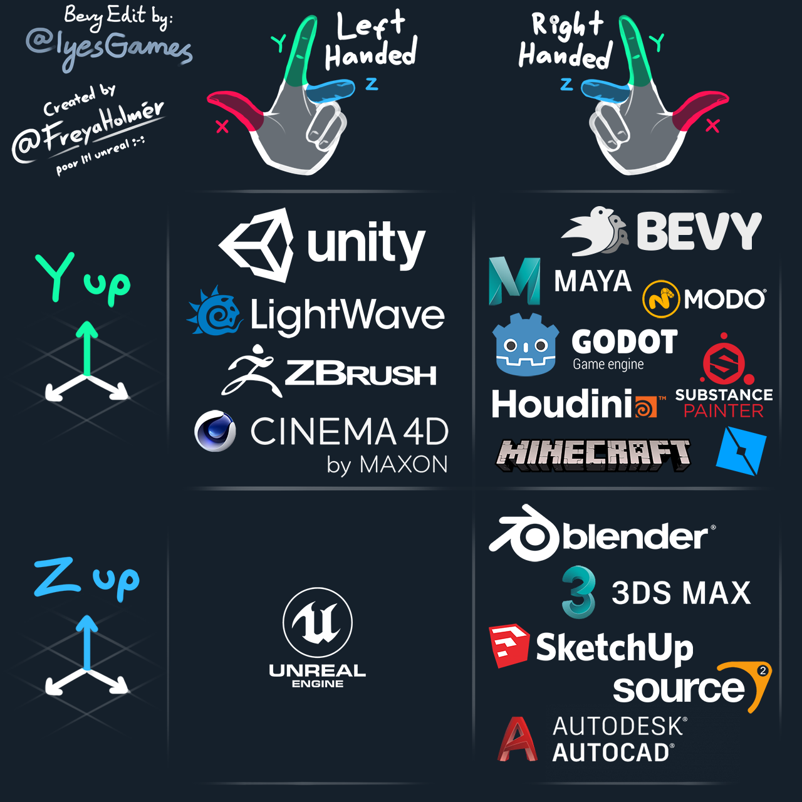
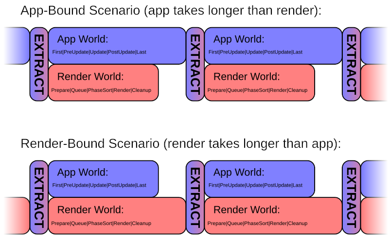

App 应用
App控制游戏的主循环，让system可以更新world。
App有两个核心部分：
World，可以保存数据（实体entities，组件components）。Schedule， 执行我们的逻辑（系统systems）。
Schedule由run函数推进，我们可以覆盖该函数以微调游戏循环的行为。
不同的游戏需要不同类型的循环。《英雄联盟》和《反恐精英》的循环肯定就不一样。我们的run函数可以进行调整以满足我们特定游戏的需求。
使用run函数推进计划将调用system，该system将操作我们World中的数据。
Defining an app 定义App
我们在main.rs中定义我们的App，该应用程序将在编译后运行二进制文件时执行。
调用App::run将启动循环并开始使用run函数推进您的计划。
fn main() {
App::new()
.add_plugins(DefaultPlugins)
.add_systems(Update, hello_world_system)
.run();
}
fn hello_world_system() {
println!("hello world");
}DefaultPlugins添加了核心插件，这些插件允许您的游戏在操作系统提供的窗口上渲染。除非您尝试在 Headless 模式（没有任何图形）下运行，或者有充分的理由这样做，否则我们始终将其包含在我们的App定义中。
Plugins 插件
Bevy使用一种将游戏组织成为单个功能的架构，叫插件。
假设一个功能Physics。Bevy允许我们编写一个PhysicsPlugin，为游戏添加物理特性。
插件可将我们功能的所有设置、运行时行为捆绑到一起，并单独控制插件的打开和关闭。
当你想使用bevy_rapier这样的库时，你可以通过添加插件来获得相关功能。
添加插件，我们只需调用App::add_plugins并传入实现Plugin trait的内容：
fn main() {
App::new()
.add_plugins(GamePlugin)
.add_plugins(PhysicsPlugin)
.add_plugins(CameraPlugin)
.run()
}我们通过在结构体上实现Plugin并重写方法build来创建一个插件。
pub struct CameraPlugin;
impl Plugin for CameraPlugin {
fn build(&self, app: &mut App) {
app.add_systems(Startup, initialize_camera);
}
}
fn initialize_camera(mut commands: Commands) {
commands.spawn(Camera2dBundle::default());
}我们也可以简化我们的插件，只定义一个函数并直接使用：
pub fn camera_plugin(app: &mut App) {
app.add_systems(Startup, initialize_camera);
}
fn initialize_camera(mut commands: Commands) {
commands.spawn(Camera2dBundle::default());
}
fn main() {
App::new()
.add_plugins(camera_plugin)
}插件的理想情况是它启用一项功能，并且可以轻松打开和关闭，而不会影响游戏的其余部分。
通过执行必要的设置（例如向游戏添加system、resource和event），每个插件都负责将其行为注入到游戏循环中。
通常，保持main.rs文件非常干净并将核心逻辑移出到像GamePlugin这样的插件中很方便，它可以进一步调用运行游戏核心部分所需的其他插件。
Plugin configuration 插件配置
我们可以为Plugin提供选项来配置我们的插件：
pub struct CameraPlugin {
debug: bool,
}
impl Plugin for CameraPlugin {
fn build(&self, app: &mut App) {
app.add_systems(Startup, initialize_camera);
if self.debug {
// Do something
}
}
}还有一些PluginGroup类型，它们允许我们将相关的插件组合在一起，然后在以后配置它们，这对于编写其他人可以添加到他们的游戏中的插件非常有用：
pub struct GamePlugins;
impl PluginGroup for GamePlugins {
fn build(self) -> PluginGroupBuilder {
PluginGroupBuilder::start::<Self>()
.add(CameraPlugin::default())
.add(PhysicsPlugin::default())
.add(LogicPlugin)
}
}PluginGroup允许我们准确配置每个Plugin的工作方式：
fn main() {
App::new()
.add_plugins(DefaultPlugins)
.add_plugins(
game::GamePlugins
.build()
.disable::<physics::PhysicsPlugin>()
)
.run();
}Running app 运行应用
当我们运行一个App时，我们调用它的App Runner函数。
根据运行程序函数的类型，调用通常永远不会返回，从而在无限循环中运行我们的游戏。
我们可以在构建App时自定义默认runner：
// This app wil run once
fn main() {
App::new()
.add_plugins(DefaultPlugins.set(ScheduleRunnerPlugin::run_once()))
.add_plugins(game::GamePlugins.build())
.run();
}// This app wil run 60 times per second
fn main() {
App::new()
.add_plugins(
DefaultPlugins.set(
ScheduleRunnerPlugin::run_loop(
Duration::from_secs_f64(1.0 / 60.0)
)
)
)
.add_plugins(game::GamePlugins.build())
.run();
}如果默认值不适合我们的游戏循环，我们甚至可以提供我们自己的自定义runner函数：
#[derive(Resource)]
struct Input(String);
fn my_runner(mut app: App) -> AppExit {
println!("Type stuff into the console");
for line in std::io::stdin().lines() {
{
let mut input = app.world_mut().resource_mut::<Input>();
input.0 = line.unwrap();
}
app.update();
}
AppExit::Success
}
fn main() {
App::new().set_runner(my_runner).run();
}从0.14开始，运行程序必须返回AppExit::Success。
Schedules 调度
Schedule是集合元数据、系统和负责运行它们的执行程序。App将执行每个Schedule的Schedule::run。Schedule::run会传递world以便我们进行修改。
我们得所有Schedule都存储在Schedules Resource中，该Resource将ScheduleLabel映射到其相应的Schedule。
因此，当您定义应用程序并添加系统时，例如：
app.add_systems(Update, hello_world)Update是一个ScheduleLabel，它将映射到实际执行hello_world system的Schedule。
我们还可以利用许多其他ScheduleLabel：
- PreStartup
- Startup
- PostStartup
- First
- PreUpdate
- StateTransition
- RunFixedUpdateLoop which runs FixedUpdate conditionally
- RunFixedUpdateLoop，它有条件地运行 FixedUpdate
- Update
- PostUpdate
- Last
首次运行时，将触发启动计划：
PreStartup -> Startup -> PostStartup ->
然后，您的正常游戏循环开始：
v---------------------<
First -> |
PreUpdate -> |
StateTransition -> |
RunFixedUpdateLoop -> |
Update -> |
PostUpdate -> |
Last -----------------^RunFixedUpdateLoop的实现与循环运行次数无关。相反，它只会在经过一定时间后运行计划FixedUpdate。
以下是Bevy内部的草图：
#[derive(Resource)]
struct FixedTimestepState {
accumulator: f64,
step: f64,
}
// An exclusive system that runs our FixedUpdate schedule manually
fn fixed_timestep_system(world: &mut World) {
world.resource_scope(|world, mut state: Mut<FixedTimestepState>| {
let time = world.resource::<Time>();
state.accumulator += time.delta_seconds_f64();
while state.accumulator >= state.step {
world.run_schedule(FixedUpdate);
state.accumulator -= state.step;
}
});
}
fn main() {
App::new()
.add_systems(Update, fixed_timestep_system)
.run();
}这意味着，如果我们正在运行游戏测试，则添加到计划FixedUpdate的系统的行为将要经过正确的时间后才会运行。
#[cfg(test)]
mod tests {
fn hello_world() {
println!("Hello World!");
}
fn test_fixed_game_loop() {
let app = App::new();
app.add_systems(FixedUpdate, hello_world);
app.update(); // This won't actually run the system
}
}这里没有简单的解决方案，因此我们一直将固定系统单元测试添加到Update计划中，以使其更易于控制。
App States 应用程序状态
App始终处于某个AppState。此状态决定了运行哪个Schedule。
因此，你的App就像一个有限状态机，你的游戏逻辑触发了状态上的迁移。
createing app state 创建状态
Bevy中的States是实现States trait的任何枚举或结构体。
#[derive(Debug, Clone, Eq, PartialEq, Hash, Default, States)]
enum AppState {
#[default]
MainMenu,
InGame,
Paused,
}
fn spawn_menu() {
// Spawn a menu
}
fn play_game() {
// Play the game
}
fn main() {
App::new()
// Add our state to our app definition
.init_state::<AppState>()
// We can add systems to trigger during transitions
.add_systems(OnEnter(AppState::MainMenu), spawn_menu)
// Or we can use run conditions
.add_systems(Update, play_game.run_if(in_state(AppState::InGame)))
.run();
}调用App::init_state<S>时：
- Bevy将为应用程序添加
State<S>和NextState<S>资源。 - 它还将添加状态转换系统。
在0.14之前，next state是一个包含Option<S>的结构体，但后来被更改了，因此你的NextState<S>是一个可以处于以下两种状态之一的枚举：
NextState::Pending(s)：下一个状态已触发，将转换。NextState::Unchanged：尚未触发下一个状态
我们通过在任意系统中调用NextState::set(S)从一种状态转换到另一种状态。
当我们调用App::init_state时Bevy会自动添加一个系统apply_state_transition<S>，它在应用程序的PreUpdate阶段运行。
此系统触发OnExit(PreviousState)和OnEnter(YourState)计划一次，然后最终过渡到下一个状态（如果已设置且当前为NextState::Pending(S)）。
我们无法转换回我们所处的相同状态。因此，如果您不小心将NextState设置为当前状态，则不会发生任何事情。
如果我们想创建显式transition，我们可以在state上实现logic：
impl AppState {
fn next(&self) -> Self {
match *self {
AppState::MainMenu => AppState::InGame,
AppState::InGame => AppState::Paused,
AppState::Paused => AppState::InGame,
}
}
}Changing app states 改变状态
更改应用程序的状态将更改运行每个时钟周期的Schedule。
当您转换到新的应用程序状态时，将在转换到Schedule状态之前运行OnExit(State)和OnEnter(State)计划。
我们可以通过使用系统内的NextState资源来触发这些更改：
fn pause_game(
mut next_state: ResMut<NextState<AppState>>,
current_state: Res<State<AppState>>,
input: Res<ButtonInput<KeyCode>>,
) {
if input.just_pressed(KeyCode::Escape) {
next_state.set(AppState::MainMenu);
}
}Sub-apps 子应用
应用程序可以添加SubApp：
#[derive(AppLabel, Clone, Copy, Hash, PartialEq, Eq, Debug)]
struct MySubApp;
let mut app = App::new();
app.insert_sub_app(MySubApp, SubApp::new());每个SubApp都包含自己的Schedule和World，它们与主App分开。
它们可以用于将游戏的逻辑分离为独立的单元。
假设我们正在制作一个游戏，其中有单独的游戏块，我们希望完全单独处理，然后与主游戏世界同步。
首先，我们可以定义某种 “块”，这些块具有我们想要控制的特定状态，例如更改它们的颜色：
#[derive(Default, Clone, Debug)]
enum ChunkState {
Red,
Green,
#[default]
Blue,
}
#[derive(Resource, Default, Clone)]
struct Chunk {
id: u32,
state: ChunkState,
}
#[derive(Resource)]
struct Chunks(HashMap<u32, Chunk>);然后我们可以创建一个插件，在我们的主应用程序上创建并插入一个子应用程序。这个子应用程序将在我们的主应用程序之后连续运行，而不是并行运行。
#[derive(Debug, Clone, Copy, Hash, PartialEq, Eq, AppLabel)]
pub struct ChunkApp;
fn update_chunks(mut chunks: ResMut<Chunks>) {
for chunk in chunks.0.values_mut() {
match chunk.state {
ChunkState::Red => chunk.state = ChunkState::Green,
ChunkState::Green => chunk.state = ChunkState::Blue,
ChunkState::Blue => chunk.state = ChunkState::Red,
}
}
}
struct ChunksPlugin;
impl Plugin for ChunksPlugin {
fn build(&self, app: &mut App) {
let mut sub_app = SubApp::new();
// Set up our sub app
sub_app
.insert_resource(Chunk::default())
.add_systems(Update, update_chunks);
// Set up how we will extract data from our main world -> sub world
sub_app.set_extract(|main_world, sub_world| {
let mut chunks = main_world.resource_mut::<Chunks>();
let chunk = sub_world.resource::<Chunk>();
chunks.0.insert(chunk.id, chunk.clone());
});
// Add our sub app to our main app
app.insert_sub_app(ChunkApp, sub_app);
}
}有关更多性能问题的更完整示例，您可以查看bevy/crates/bevy_render中使用async的pipelined_rendering.rs。
Multithreading 多线程
默认情况下，应用程序将在多个线程上运行。Scheduler正在努力尝试在系统具有不相交的查询集时并行运行系统。
我们可以通过更改TaskPoolPlugin的ThreadPoolOptions来配置此行为：
fn main() {
App::new()
.add_plugins(DefaultPlugins.set(TaskPoolPlugin {
task_pool_options: TaskPoolOptions::with_num_threads(4),
}))
.run();
}Running headless app 运行无头应用
如果您想在不生成窗口或使用任何渲染系统的情况下运行您的应用程序，并且使用最少的资源，我们可以使用MinimalPlugins而不是我们通常添加的DefaultPlugins。
这对于编写和运行包含游戏中的各种插件但不需要在屏幕上显示的测试非常有用。
相反，如果您希望大多数其他系统像Bevy的资产、场景等一样运行，但不渲染到您的屏幕，则可以配置DefaultPlugins来执行此操作：
use bevy::prelude::*;
use bevy::render::{
settings::{RenderCreation, WgpuSettings},
RenderPlugin,
};
fn main() {
App::new()
.add_plugins(DefaultPlugins.set(RenderPlugin {
synchronous_pipeline_compilation: true,
render_creation: RenderCreation::Automatic(WgpuSettings {
backends: None,
..default()
}),
}))
.run();
}Archetypes 原型
Bevy是一个典型的ECS。原型通过根据其组件组成对具有相似行为的实体进行分组，从而能够有效地存储和处理具有相似行为的实体。
Archetype是组件的唯一组合。Bevy将这些组合存储在Table上。
通过将一起访问的组件放在同一个内存位置，我们可以帮助我们的内存访问更加高效。
当查询用作系统参数时，Bevy会计算它请求的组件集的匹配Archetype。这让Bevy可以计算哪些系统可以并行运行（见下文）。
当您将组件添加到实体时，您会将该实体移动到新的原型。
一个世界对于每个独特的组件组合只有一个Archetype。
Archetype存储了一些关于自身的元数据：
// https://docs.rs/bevy/latest/bevy/ecs/archetype/struct.Archetype.html
pub struct Archetype {
id: ArchetypeId,
table_id: TableId,
edges: Edges,
entities: Vec<ArchetypeEntity>,
components: ImmutableSparseSet<ComponentId, ArchetypeComponentInfo>,
}Archetypes存储在一个特定的世界中，并且仅在该World本地唯一：
// https://docs.rs/bevy/latest/bevy/ecs/archetype/struct.Archetypes.html
pub struct Archetypes {
pub(crate) archetypes: Vec<Archetype>,
archetype_component_count: usize,
by_components: bevy_utils::HashMap<ArchetypeComponents, ArchetypeId>
}Starting without archetypes 从原型开始
想象一下，我们有一个ECS的朴素实现，它将组件存储为数组，将实体存储为索引：
| Entity ID | Health | Player | Position | Enemy |
|---|---|---|---|---|
| 1 | 100 | √ | (3, 2) | |
| 2 | 72 | (3, 1) | √ | |
| 3 | 40 | √ | (4, 2) | |
| 4 | 20 | (3, 0) | √ |
Player和Enemy中的差距对于我们的内存访问来说非常尴尬。如果我们想编写矢量化代码来处理这些数组，那么空值将带来一个严重的问题。
“矢量化代码”是指一次对整个数组或数据向量进行操作的代码，而不是按顺序处理单个元素的代码。
使用SIMD（单指令、多数据）指令等硬件优化，可以高效地执行矢量化操作。这些指令允许对多个数据元素同时执行相同的操作，通常可以提高性能。
但是，在给定的场景中，由于实体 ID 与数组索引（我们的空白区域）不匹配，因此编写需要Player和Enemy数组的矢量化代码变得具有挑战性。
矢量化操作通常依赖于不同数组中的相应元素具有相同的索引的假设。如果 A 和 B 中的实体 ID 未与数组索引对齐，则很难执行依赖于两个数组之间匹配元素的操作。
Improving the layout of our components 改进组件的布局
如果我们以可能使用的方式存储组件会怎样？
| Entity ID | Health | Player | Position | Enemy |
|---|---|---|---|---|
| 1 | 100 | √ | (3, 2) | |
| 3 | 40 | √ | (4, 2) |
| Entity ID | Health | Player | Position | Enemy |
|---|---|---|---|---|
| 2 | 72 | (3, 1) | √ | |
| 4 | 20 | (3, 0) | √ |
现在我们有两个表，但每个表都形成一个连续的元素数组，这些元素可以在检索时进行优化。
这两个表都有不同的Archetype。一种用于Player，另一种用于Enemy。
因此，我们将组件存储在相同类型的数组中，但位于表示实体的 type （如其所有组件的总和）的不同表中。我们将这种“类型”称为Archetype。
Archetypes help find disjointed queries 原型有助于找到交叉的查询
一个Component可以出现在许多Archetype中。这是通过使用ArchetypeComponentId来完成的，这种多对多关系是并行调度程序如何计算出可以同时运行的脱节只读查询的方式。
乍一看，您可能会认为这不应该能够并行运行：
fn move_players(
player_positions: Query<&mut Position, With<Player>>,
) {
// ...
}
fn move_enemies(
enemy_positions: Query<&mut Position, Without<Player>>
) {
// ...
}如果组件只是在巨大的Vec<T>上存储和访问，那么player_positions将已经借用了Position 组件和enemy_positions不应并行运行。
但是，因为我们为每个Archetype提供一个表，所以即使两个查询都返回&mut Position，它们也不会发生冲突并且可以并行运行。
这是因为即使Position的ComponentId相同，它们的ArchetypeComponentId也会不同。
换句话说，每个Component只有一个ComponentId，但可以有多个ArchetypeComponentId。它类似于SQL数据库中 Component和Archetype之间的多对多关系：
Component <-- ComponentId <-- ArchetypeComponentId --> ArchetypeId --> Archetype
When and how do archetypes get updated? 原型何时以及如何更新？
当我们生成或插入Bundle时，Archetype就会存在。
给定存储在Table或SparseSet或两者的某种组合中的一组组件，Bevy将调用Archetypes::get_id_or_insert来分配或找到一个TableId，它将用于创建一个新的Archetype。
当我们从Entity添加或删除捆绑包时，它会将其移动到新的Archetype表。
这些移动可能非常昂贵，因此Bevy将这些移动缓存在Edges中。下次添加捆绑包时，我们可以获取匹配的边缘并找到目标 Archetype将其移动到，而无需从头开始计算。
How does bevy know our archetypes have changed? Bevy怎么知道我们的原型已经改变了？
每次我们添加或删除组件时，Archetypes的ArchetypeGeneration都会发生变化。
Bevy使用当前原型的长度来创建分代索引，以保证在添加或删除原型时有唯一的索引。
当我们必须更新原型索引时，我们使用这一代，以便当我们查询事物时它们位于它们应该在的位置。
ECS 实体、组件、系统
ECS 是“Entity Component System”的首字母缩写词，是一种编程范式（类似于 Model View Controller），Bevy针对存储和数据访问做了最大性能优化。
与任何编程范式一样，我们按分类法命名和装箱：
- Entities实体代表世界中的“事物”，它实际上只是一个 ID
- Components组件代表 “things” 上的数据
- Systems系统列举了组件并影响世界其他部分
这种思维方式不像MVC编程那样直观，在MVC编程中，我们将实体、组件和系统的概念组合在一起。
将它们分开意味着程序员对机器更有同情心，但代价是能够轻松地同时理解整个系统。
在ECS中，我们鼓励将游戏分解为更小的部分，这些部分在这些组件的小集合上运行。这意味着每个功能可能更容易单独编写，但更难理解整个难题。
那么为什么要费心呢？性能。
Squeezing performance out of our CPU 从CPU中榨取性能
为了提高计算机的速度，我们需要小心将数据存储在内存中的方式。如果我们能让CPU从缓存中为我们提供数据，而不是从RAM中获取数据，那么我们的CPU将会更加高性能，因为RAM要昂贵得多。
我们越能将数据保存在连续数组中，我们的CPU就越擅长使用其缓存，从而避免不必要地访问我们计算机的速度要慢得多的内存。
当我说“contiguous array”时，我的意思是数组中的每个项目都应该既有用又有序，这样当我们访问它时，我们的CPU缓存可以正确预测我们的意图。
我们对CPU更加同情，作为交换，我们的CPU更加努力地工作，以节省我们访问内存的时间。
如果0表示某个需要访问的物品，则[1, 0, 0, 0, 5, 0, 0, 7]的数组可以是连续的。但是，如果我们使用0表示null，则我们的访问模式将与缓存预期的不匹配。
ECS的一大理念是将所有内容存储在连续的数组中，其方式与我们在游戏逻辑中使用它们的方式相匹配。
游戏引擎循环遍历我们的游戏逻辑和每个更新，我们想对游戏中的 “things” 执行一些操作。通常会修改它们保存的数据，比如移动它的位置。这推动了我们的游戏状态。
在经典的面向对象游戏中，我们可以像这样布局我们的玩家：
struct Position {
x: f32,
y: f32,
}
struct Velocity {
dx: f32,
dy: f32,
}
struct Points(f32);
struct Player {
points: Points(f32),
position: Position,
velocity: Velocity,
}
fn main() {
let players: Vec<Player> = vec![
Player {
points: Points(1.0),
position: Position { x: 0.0, y: 0.0 },
velocity: Velocity { dx: 1.0, dy: 1.0 }
},
Player {
points: Points(1.0),
position: Position { x: 0.0, y: 0.0 },
velocity: Velocity { dx: 2.0, dy: 2.0 },
},
// More players...
];
loop {
// Iterate over all entities and update their positions
for player in players.iter() {
player.points += 1.0
player.position.x += player.velocity.dx;
player.position.y += player.velocity.dy;
}
}
}这种方法非常简洁易读，但其性能受到了影响。
Efficient memory layout 高效的内存布局
上面示例中的内存布局目前如下所示：
Player 1: [Points1, Position1, Velocity1]
Player 2: [Points2, Position2, Velocity2]
Player 3: [Points3, Position3, Velocity3]
当我们的CPU从内存中获取数据并将其放入缓存时，它会在称为 “缓存行” 的固定块中进行。常见的缓存行大小从32到512字节不等，其中64字节是现代CPU的普遍选择。
CPU将抓取整个缓存行，即使实际上只需要一部分数据。
在此过程中，CPU会猜测一起存储在内存中的内容可能会一起访问，这称为空间局部性。
所以我们可以想象，目前我们的缓存行是这样的：
Cache Line 1: [Points1, Position1]
Cache Line 2: [Velocity1, Points2]
Cache Line 3: [Position2, Velocity2]
... etc
将变量加载到堆栈上时，会将其加载到缓存中。然后，当稍后再次访问它时，CPU将首先检查其缓存。
如果在此期间加载了其他数据，它将被驱逐，必须从内存中获取，这称为缓存未命中。
当我们遍历上面的玩家并获取每个玩家的数据时，我们会在缓存中跳来跳去，试图获取缺失的数据。这将逐出其他缓存行并获得缓存未命中，从而导致性能变差。
因为我们访问的是包含大量数据的实体，并枚举每个实体的所有数据，所以我们的缓存可能会被清除。
那么？咋办呢？
好吧，我们可以将游戏数据存储到“数组结构”（SoA） 中，而不是之前的“结构数组”（AoS）。
struct Entity {
id: u32,
}
struct PositionComponent {
x: f32,
y: f32,
}
struct VelocityComponent {
dx: f32,
dy: f32,
}
struct World {
entities: Vec<Entity>,
positions: Vec<PositionComponent>,
velocities: Vec<VelocityComponent>,
}
fn update_positions_and_velocities(world: &mut World) {
for (position, velocity) in world.positions.iter_mut().zip(world.velocities.iter()) {
position.x += velocity.dx;
position.y += velocity.dy;
}
}现在，当我们加载组件时，我们的内存布局如下：
Velocities: [Velocity1, Velocity2, Velocity3]
Positions: [Position1, Position2, Position3]
通过将相同类型的组件存储在一起，并使用实体的ID作为每个数组中的索引，我们可以只访问我们需要的数据。
因此，当我们枚举这些数组时，我们的内存访问模式与CPU预测的内容相匹配，并且我们的缓存行不太可能被抖动。
我们通过按顺序访问每个组件来将每个组件加载到堆栈上，从而最大限度地提高缓存的效率。
Entities help us avoid passing references to our data 实体帮助我们避免传递对数据的引用
好的，通过使用ECS的实体和组件部分，我们可以获得更好的内存性能。但还有一个想法，我们如何管理我们的引用和指针？
在上面的例子中，我们去掉了我们的Player，它变成了隐式的。玩家的概念变成了一个实体，其Player组件存储在索引中，与我们实体的ID匹配。
要在我们的游戏世界中重建 “thing”，我们只需访问每个数组的第n项。
这是一个强大的抽象，因为我们可以避免传递对数组上数据的引用。相反，我们可以传递实体的索引，当我们需要数据时，我们可以从一个地方请求它。
通过在系统中本地化我们的内存访问，我们可以彼此并行地执行数据脱节的查询，从而获得更多的性能提升。
Archetypes help combinations of components stay together in memory 原型有助于组件组合在内存中保持在一起
我们的系统通常根据实体拥有的组件组来迭代实体。但是，这些数组可以分散在不同的数组或数组的结构中。
为了解决这个问题，一些ECS框架（包括Bevy）引入了原型。
原型通过将具有相似组件组成的实体组织到一个表中来解决这种低效率问题。每个原型都拥有一个表，该表表示特定的组件组合。共享相同组件组成的实体被放置在该原型的表中。
通过对具有相似组件组成的实体进行分组，原型消除了原始组件存储中的冗余。
每个原型都有它自己的组件数组集，并且同一原型中的实体共享相同的数组实例。与单独存储每个实体的组件相比，这减少了内存开销。
原型还支持对具有相似组件组成的实体进行批处理。系统可以同时处理同一原型中的多个实体，从而利用数据并行性。这对于更新位置、应用物理特性或执行AI计算等操作非常有用。
这就解释了为什么Bevy选择使用原型ECS作为其框架的核心。让我们看看它在Bevy中具体是如何工作的。
ECS with Bevy Bevy中的ECS
Bevy是一个使用Rust构建的原型ECS。它使用实体（Entities）、组件（Components）和系统（Systems）的组合来构建游戏逻辑，其方式比其他编程范例更可表达且性能更高。
ECS基本上是一个高效的内存数据库。
Entities 实体
这些是数据库的行。它们拥有唯一的标识符。
游戏中的每个事物都是一个实体，具有零个或多个充当列的组件。
Components 组件
组件就是列。它们与特定的Entity相关联。
每个组件类型只保存少量数据，而实体则由许多这样的组件组成。
将游戏世界对象的身份与其所保存的数据分开的好处是，我们可以仅查询每个系统中所需的组件。
如果两个系统需要不同的数据，它们可能能够彼此并行运行，这可能会带来超出我们之前讨论的收益。
在Bevy中，组件是存储在World中并附加到Entity的Rust结构。
Systems 系统
系统是实际执行影响组件状态的功能。
每个系统都声明它需要运行哪些组件或组件组。然后App提供每个游戏的特定组件。
在Bevy中，这些是简单的Rust函数。它们甚至可以是一个闭包（匿名函数、lambda）。
默认情况下，系统彼此并行运行，并且它们的顺序是不确定的。
Apps 应用程序
应用程序是控制游戏循环的。
它们可用于向我们的核心游戏循环添加系统、资源、状态和其他内容。
fn main() {
App::new()
.add_systems(Startup, startup_system)
.add_systems(Update, normal_system)
.run();
}Worlds 世界
世界是数据实际存在的地方。
可以将其想象为HashSet或Vec，用于跟踪帧与帧之间的所有内容。
World引用被传递给诸如命令之类的函数，这些函数使用其数据结构来获取和保留实体和组件。
Bundles 捆绑包
为了使生成具有特定组件的实体更加符合人体工程学，我们可以使用Bundle一次生成一组组件。
为了制作Bundle，我们实现了Bundle特征，它允许插入或删除组件。
每个实现Component的类型也实现Bundle。
在Bevy0.15中，将引入一个名为必需组件的新概念，作为捆绑包概念的后继者。
Archetypes 原型
原型是一组存储在一起的组件，就像我们在系统中访问它们一样。
每个World对于它所包含的每个独特的组件组合都有一个原型。
原型对于它们所在的World来说是本地唯一的。
原型和捆绑形成一个图表。添加或删除捆绑包会将Entity移动到新的Archetype。 Edges用于缓存这些移动的结果。
Resources 资源
没有对应的Entity的单例Component。
示例：
- Asset storage 资产存储
- Events 事件
- System state 状态
计数器就是一个例子，它可以计数，但与任何特定实体无关。
在任何给定时间，每种类型只能存储一个资源到World中。
还有非发送资源（non-send resources），只能在主线程上访问。
每个资源都由其TypeID唯一标识。
Commands 命令
命令让我们可以安排对世界的可变访问。命令接收对我们的世界的独占可变访问，并且可以对组件和实体进行更改。
这对于线程安全的并行执行非常重要。
使用命令的替代方法是使用阻止并行执行的ExclusiveSystem。这样我们就可以立即调用我们的命令，而不必担心它们与其他系统的顺序。
Events 活动
事件通过消息总线样式的事件存储来使用，可以使用EntityReader和EntityWriter访问该事件存储。
EntityWriter会将事件推送到队列以供其他EntityReader使用。
EntityReader将使用队列中的事件，确保读取事件的系统仅使用每个事件一次。
Entities 实体
概括地说，Entity独占拥有零个或多个Component实例。
每个实体只能具有每种类型的单个组件。可以在实体的生命周期内动态添加或删除这些类型。
实体是表示其相关组件的索引的标识符。
Entities are identifiers 实体是标识符
Entity类型是一个轻量级标识符，仅对其来源的世界有效。
// https://github.com/bevyengine/bevy/blob/main/crates/bevy_ecs/src/entity/mod.rs
#[derive(Clone, Copy, Eq, Ord, PartialEq, PartialOrd)]
pub struct Entity {
generation: u32,
index: u32,
}类型本身是index和generation属性的简单持有者。
两者形成一个代际索引。这允许在数组中删除数据后快速插入，同时保持连续的内存布局，从而提高 ECS 的性能。
Entities are local to the world 实体是世界的本地实体
每个World都保留一个Entities列表，其中包含3组实体ID：
freelist：以前释放的IDreserved：曾经在空闲列表中但被保留的ID列表pending：尚不存在的新ID的计数
分代索引可确保同时存在的两个实体永远不会共享同一索引。
每次取消具有给定索引的实体时，代数都会增加。这用作给定索引被重用的次数的 “计数”。
这些唯一标识符使Bevy能够以懒惰的方式分配它们。它首先保留一个ID，然后可以稍后分配它。
此测试说明了以下概念：
#[cfg(test)]
mod tests {
#[derive(Component)]
struct Health(i32);
#[test]
fn reserve_and_spawn() {
let mut world = World::default();
// We reserve an entity id
let id = world.entities().reserve_entity();
// Then we lazily spawn the entity using
// the reserved id
world.flush();
let mut entity = world.entity_mut(id);
entity.insert(Health(0));
assert_eq!(
entity.get::<Health>().unwrap(),
&Health(0)
);
}
}在实际应用程序中，我们实际上并不自己管理任何这些。我们改用commands系统参数：
fn spawn_health(
mut commands: Commands
) {
commands.spawn(Health(0));
}Entities are stored in tables 实体存储在表中
Entities是World持有的一种类型，用于World中所有实体的元数据。每条元数据都包含：
- 每个实体的生成。
- 特定实体的活动/死亡状态。
- 实体组件在内存中的位置（
EntityLocation）。
EntityLocation包含有关存储实体组件的Table的信息。
每个Table对于其存储的每种组件类型都有一个Column：
// https://github.com/bevyengine/bevy/blob/main/crates/bevy_ecs/src/storage/table/mod.rs
pub struct Table {
columns: ImmutableSparseSet<ComponentId, ThinColumn>,
entities: Vec<Entity>,
}ImmutableSparseSet可以理解为一个简单的HashMap，而Column则是一个类型擦除的Vec<T: Component>。
为了从表中获取行，我们使用Entity作为每个Column的索引。
因此，如果我们有一个包含3列的表：
Health column: [_, _, 50]
Player column: [_, _, X]
Enemy column: [_, _, _]
我们可以获取ID为2的实体的组件，如下所示：
Health(50)
Player
这是一个简化的说明。Bevy实际上会创建一个代表此ID的类型TableRow，我们可以使用Entity标识符来获取TableRow。
Entities enable structure of arrays 实体启用数组结构
这种存储概念称为数组结构（SoA），而不是结构数组（AoS）。
在AoS程序中，我们可以想象一个更传统的面向对象的游戏引擎，如Godot。我们的结构容纳了我们的所有组件。因此，一个对象具有许多属性，每个属性都是一个组件：
struct Player {
health: u32,
speed: u32,
name: String,
team: u32
}我们可以考虑我们的游戏循环迭代每个玩家并执行其所需的逻辑：
fn movement_system(mut players: Query<&mut Player>) {}
fn attacking_system(mut players: Query<&mut Player>) {}一个问题是我们不能再拆分这些可变引用。每个对玩家做任何事情的系统都必须等待轮到执行。像这样的神物越集中，问题就越困难。
每个查询还需要更多内存，一个系统可能只使用名称，但加载其所有其余组件仍然相同。
相反，在Bevy中我们使用数组结构来做同样的事情：
struct Player;
struct Health(u32);
struct Name(String);
struct TeamId(u32);当我们想要创建一个在某些情况下减少我们健康的系统时，我们不需要可变地借用其他组件。
如果系统不需要对相同数据进行可变访问，Bevy将努力尝试安排您的系统并行运行。
Archetypes group components by entities 原型按实体对组件进行分组
那么实体的组件进入哪个Table？这就是Archetype的用武之地。
每个组件都有一个基于其实体所具有的组件组合的ArchetypeId。
对于实体上每个独特的组件组合，世界只有一个Archetype。它们的ArchetypeId对于世界而言是本地唯一的，而不是世界之间的全局唯一的。
原型指向特定的表，但多个原型可以将它们的表组件存储在同一个表中。
Archetype和Table都已创建，但从未清理。它们不会被移除并持续存在，直到世界被抛弃。
原型在调度程序使用时非常有用：
fn system_a(query: Query<&mut Health, With<Player>>) {}
fn system_b(query: Query<&mut Health, Without<Player>>) {}system_b将与system_a并行，即使两者使用对同一组件类型的可变引用。
尽管两个组件共享相同的ComponentId，但它们实际上具有不同的ArchetypeComponentId，这让调度程序可以识别这些不相交的查询。
Component 组件
在实体组件系统 （ECS） 中，你可以想象你的行是实体，你的组件是列。
组件允许我们将数据附加到我们的实体。
Entity本身不是很有用。它只表示我们游戏中某个事物的全局唯一ID。
因此，当我们需要添加health、damage或任何代表我们的实体可以处于的状态时，我们通过添加一个保存数据的组件来实现。
Bevy使用自己的ECS将其许多内部结构表示为组件：
- Resources are just singleton components without an entity
- Your game window is a Window component
- Your cameras are some entity with a Camera component
- Handles are components we attach to entities
我们感兴趣的大多数事情都涉及通过系统查询一个或另一个组件。
Defining a component 定义组件
我们将组件定义为普通结构体，但我们通过使用derive宏告诉Bevy它们：
#[derive(Component)]
struct Position {
x: i32,
y: i32
}这个derive宏将在编译时向这个结构体添加行为，并使其能够通过我们的查询获取到。
当我们查询组件时，我们可以请求可变或只读访问，然后对它的字段做任何我们想做的事情来改变我们实体的状态。
Component可以是结构体，也可以是其他数据类型，如enum或zero大小类型：
// A simple marker type
#[derive(Component)]
struct Player;
// Or an enum
#[derive(Component)]
enum Ship {
Destroyer,
Frigate,
Scout
}这些没有数据的组件充当我们行上的索引。它们让我们将组件标记为一个类型，然后在我们的系统中查询这些组件。
Components are columns 组件是列
一个好的心智模型是，每个组件都是数据库中的列，而实体是行。
这样想会让一些重要的事情更加明显：
- Each entity can only have one component of each type（每个实体只能具有每种类型的一个组件）
- When you insert a component on an entity that already has one of that type, you will replace the original（当你在已具有该类型之一的实体上插入组件时，您将替换原始的）
所以我们可以翻译如下内容：
fn spawn_entities(
mut commands: Commands
) {
commands.spawn((
Health(100.0),
Player,
Position { x: 3, y: 2 }
));
commands.spawn((
Health(72.0),
Enemy,
Position { x: 3, y: 1 }
));
}如创建一个虚构的数据库，如下所示：
| Entity ID | Health | Player | Position | Enemy |
|---|---|---|---|---|
| 1 | 100 | √ | (3, 2) | |
| 2 | 72 | (3,1) | √ |
实际上，组件存储为许多单独的连续数组。
每个数组都有单一类型的组件。Entity实际上是每个不同数组中其所有组件的索引。
例如，假设我们有一个Health和Position组件数组：
Health: [Health(100.0), Health(72.0)]
Position: [Position(3, 2), Position(3, 1)]
如果实体的索引为0，那么我们可以进入每个数组并访问该索引处的组件，从而得到Health(100.0)和Position(3, 2)。
这就是为什么我们每种类型只能有一个组件。槽中只能有一个与我们实体的索引匹配的组件。
这一切都是为了通过帮助 CPU 从其缓存中更多地获取数据来提高性能。
Adding components to entities 向实体添加组件
我们通过命令将组件添加到实体中：
fn spawn_player(
mut commands: Commands
) {
commands
.spawn_empty()
.insert(Player)
.insert(Ship::Destroyer)
.insert(Position { x: 1, y: 2 });
}这将安排一系列要运行的命令，这些命令将添加新的Entity，然后通过将每个组件放置在我们在上一节中提到的数组中来插入每个组件。
这些数组可以是以下两种专用类型之一：
Table-> Faster for iterating (the default)SparseSet-> Faster for adding and removing
要使用SparseSet，我们在派生组件时会使用一个额外的属性：
#[derive(Component)]
#[component(storage = "SparseSet")]
struct Explode;如何抉择使用哪一个？这取决是查询密集还是修改密集。
像Explode组件这样的东西，它既有一些行为，同时添加和修改的场景又比读取场景多得多，SparseSet就会是一个比Table更好的选择。
当我们想为我们的实体获取组件时，我们会在存储每个不同组件的每个Table或SparseSet中查找该索引。这就是我们的各个组件最终成为游戏世界中一部分的方式。
在现实中，存在一些隐藏的复杂性，使这个过程变得更快，使用原型尝试将组件组存储在一起，以最有可能访问它们的方式。
Bevy使用这些原型来确定哪些系统可以并行运行以及其他性能提升。
在我们的实体中添加或删除组件的能力实际上来自Bundle trait。所有组件都实现了这个trait。当我们派生组件时，我们也实现了Bundle。
在Bevy0.15中，将有一个更新的功能，它将替换称为required components的捆绑包，当它们发布时，我将在此处更新它们。
Using bundles使用 bundle
Bundle可以包含一组其他组件。
这在单独插入元件可能是重复的时非常有用。或者我们希望确保所有玩家都生成了一组特定的组件。
重要的是要了解bundle实际上并不存在。您无法查询它们。它们仅用于添加组件组，然后它们就不复存在了。
定义bundle就像我们的组件一样。我们使用derive宏：
#[derive(Bundle)]
struct PlayerBundle {
player: Player,
ship: Ship,
position: Position
}一旦派生出来，我们就可以插入我们的 bundle，而不是插入我们的单个组件：
commands
.spawn_empty()
.insert(PlayerBundle{
player: Player,
ship: Ship::Destroyer,
position: Position { x: 1, y: 2 }
});但建议实现你自己的接口来创建我们的bundle，以减少样板：
impl PlayerBundle {
pub fn new(x: i32, y: i32) -> Self {
Self {
player: Player,
ship: Ship::Destroyer,
position: Position { x, y }
}
}
}
fn spawn_player_bundle(
mut commands: Commands
) {
commands
.spawn_empty()
.insert(PlayerBundle::new(1, 2));
}bundle的Tuples也实现了Bundle（对于最多15个bundle的元组，遗憾的是Rust仍然缺少可变参数泛型）。这意味着我们可以在不定义类型的情况下创建一组组件：
fn spawn_player_tuple(
mut commands: Commands
) {
commands
.spawn_empty()
.insert((
Player,
Ship::Destroyer,
Position { x: 1, y: 2 }
));
}每个Component都实现了Bundle，并且bundle的Tuples本身也是一个Bundle。
更进一步，我们的元组可以包含嵌套的bundle元组，这允许我们嵌套我们的bundle以绕过15个元组的限制。
nothing () 的元组也算作一个捆绑包，这对于使用World::spawn_batch生成实体很有用。
The component derive macro 组件 derive 宏
使用#[derive(...)]告诉我们的编译器生成代码，该代码将使用其默认实现实现我们放在括号内的任何trait。
此处的Default是指在trait本身上定义的实现。
并非所有Rusttrait都会定义可派生的默认实现。像Display这样的东西将特定于我们将其放置到的每个结构体。但对于我们的组件来说，trait本身非常简单：
// https://docs.rs/bevy/latest/bevy/ecs/component/trait.Component.html
pub trait Component:
Send
+ Sync
+ 'static {
const STORAGE_TYPE: StorageType;
// Provided method
fn register_component_hooks(_hooks: &mut ComponentHooks) { ... }
}组件有两种类型的存储，具有不同的权衡：
TableStorage(default): Fast for iteration, slow for adding/removingSparseSetStorage: Fast for adding/removing, slow for iterating
Bevy将trait标记为Send + Sync + 'static。这些是trait bounds，它们指定Component trait的任何实现也必须满足这些trait。
Send + Sync的意思是我们的Component可以安全地在线程之间传递，Bevy使用它来并行运行我们的系统。'static是一个生命周期，这意味着我们的Component将在程序的整个持续时间内存在。
但是，这并不意味着组件永远不会被清理。这只是意味着任何对我们组件的引用都可以永远与Rust的借用规则共存。
Systems 系统
系统是Rust函数，它是实现了SystemParam的特殊参数。我们指定我们想要的系统参数，Bevy使用一些类型魔法来提供它们。
Rust没有可变参数，因此这是通过宏实现的，这些宏为具有许多受支持参数（最多15个）的函数实现trait。
Rust函数（或lambda）可以通过IntoSystem trait自动转换为System：
fn hello_world() {
println!("Hello, world!");
}
let mut system = IntoSystem::into_system(hello_world);资源、命令和查询都描述了在ECS中获取数据的方法。因此，你的参数是与游戏World交互的一种声明性方式。
当App运行系统时，它会根据特定参数自动找出调用函数的正确方式。
Bevy还使用我们类型的数据访问信息来确定哪些系统并行运行。
Scheduling systems 调度系统
当系统被添加到我们的App时，它们会被添加到特定的Schedule。这些计划包含每个系统在每个帧的运行过程中应何时运行的规则。
事实上，Bevy正在尝试安排所有不需要对相同数据的可变访问的系统并行运行。这一切都是为了加快我们的游戏速度。
要调度一个系统，我们调用add_systems并指定调度和我们想要运行的系统：
fn main() {
App::new()
.add_plugins(DefaultPlugins)
.add_systems(Update, hello_world);
}或者，如果我们需要对排序进行细粒度的控制，我们可以使用Bevy的内置方法，如before和after：
fn main() {
App::new()
.add_plugins(DefaultPlugins)
.add_systems(Update, (defend, attack.after(defend)));
}在0.11之前，有6种方法可以初始化我们的系统，这引起了很多困惑。但后来它被浓缩成一个更加友好高效add_systems函数。
需要注意的一点是，仅拥有参数并有条件地使用它们不会阻止并行执行：
fn system_a(mut commands: Commands) {
if random_bool() {
commands.spawn_empty();
}
}
fn system_b(mut commands: Commands) {
if random_bool() {
commands.spawn_empty();
}
}这两个系统有可能并行运行。可变借用的开销取决于我们是否调用它。
Ordering 次序
默认情况下，系统彼此并行运行，并且它们的顺序是不确定的。
普通系统无法安全地直接访问World实例，因为它们并行运行。我们的World包含我们所有的组件，因此并行更改它的任意部分不是线程安全的。
可以通过以下方式控制排序：
- The core sets like
Update,PostUpdate,FixedUpdate, etc.. - by calling the
.before(this_system)or.after(that_system)methods when adding them to your schedule - by adding them to a
SystemSet, and then using.configure_set(ThisSet.before(ThatSet))syntax to configure many systems at once - hrough the use of
.add_systems(Update, (system_a, system_b, system_c).chain()) - by calling
.in_schedule - by calling
.on_startup
System params and param sets 系统参数和参数集
System params将自动从World中获取数据，而无需直接与World结构体交互。
系统采用SystemParam trait参数。SystemParam结构有两个生命周期：
'wfor data stored in the World'sfor data stored in a parameter's local state
一些常见的SystemParam是：
| System parameter | Description |
|---|---|
Res | A reference to a resource |
ResMut | A mutable reference to a resource |
Local | A local system variable that persists between invocations of the system |
Deferred | A param that stores a buffer which gets applied to a World during an apply_system_buffers call |
NonSend/NonSendMut | A shared borrow of a non Send resource, systems taking these are forced onto the main thread to avoid sending these resources between threads |
SystemChangeTick | Reads the previous and current change ticks containing a last_run and this_run each holding a Tick which can be used to check the time the system has been run at. |
Query | A query for resources, components or entities |
Commands | The main interface for scheduling commands to run |
EventReader | An interface for reading events of a particular type |
EventWriter | An interface for writing events of a particular type |
&World | A reference to the current World |
Archetypes | Metadata about archetypes |
Bundles | Metadata about bundles |
Components | Metadata about components |
Entities | Metadata about entities |
ParamSet是可能冲突的SystemParam的集合。它允许系统安全地访问最多8个互斥的参数并与之交互。例如：引用相同可变数据的两个查询或相同类型的事件读取器和写入器。
我们可以根据它们在类型中定义的顺序来访问p0、p1等的ParamSet的参数。
ParamSet可以采用任何SystemParam。
在一个系统中可变地访问同一个组件两次时，可以使用ParamSet：
// This will panic at runtime when the system gets initialized.
fn bad_system(
mut enemies: Query<&mut Health, With<Enemy>>,
mut allies: Query<&mut Health, With<Ally>>,
) {
// ...
}相反，ParamSet利用借用检查器来确保在给定时间只访问一个包含的参数。
fn good_system(
mut set: ParamSet<(
Query<&mut Health, With<Enemy>>,
Query<&mut Health, With<Ally>>,
)>,
) {
// This will access the first `SystemParam`.
for mut health in set.p0().iter_mut() {
// Do your fancy stuff here...
}
// The second `SystemParam`.
// This would fail to compile if the previous parameter was still borrowed.
for mut health in set.p1().iter_mut() {
// Do even fancier stuff here...
}
}Custom system parameters 自定义系统参数
我们可以通过在结构体上派生trait来创建自己的系统参数。我们唯一需要注意的是前面提到的两次生命周期标注。
// The [`SystemParam`] struct can contain any types that can also be included in
// a system function signature.
//
// In this example, it includes a query and a mutable resource.
#[derive(SystemParam)]
struct PlayerCounter<'w, 's> {
players: Query<'w, 's, &'static Player>,
count: ResMut<'w, PlayerCount>,
}
impl<'w, 's> PlayerCounter<'w, 's> {
fn count(&mut self) {
self.count.0 = self.players.iter().len();
}
}
// The [`SystemParam`] can be used directly in a system argument.
fn count_players(mut counter: PlayerCounter) {
counter.count();
println!("{} players in the game", counter.count.0);
}System state 系统状态
系统可以使用Local<T>``system参数进行状态的本地化：
fn print_at_end_round(mut counter: Local<u32>) {
*counter += 1;
println!("In set 'Last' for the {}th time", *counter);
// Print an empty line between rounds
println!();
}Local``counter变量将在函数调用之间保持其状态，仅对该系统有效，其他系统无法获取到该资源。
Combining systems 组合系统
高阶系统甚至可以由使用pipe法的许多其他系统组成：
这应该与ParamSet结合使用，以避免SystemParam冲突。
fn main() {
App::new()
.add_plugins(DefaultPlugins)
.add_systems(
Update,
(
parse_message_system.pipe(handler_system),
data_pipe_system.pipe(info),
parse_message_system.pipe(debug),
warning_pipe_system.pipe(warn),
parse_error_message_system.pipe(error),
parse_message_system.pipe(ignore),
),
);
}Assets 资产
资产是需要加载到我们游戏中的资源，例如：
- 纹理
- 音频
- 3D模型
- 其他媒体文件
通常这些资源非常大，因此将它们全部加载到内存中会很慢且不可行。Bevy的资产系统努力使这种加载变得简单，并且能够异步完成。
在Bevy中，资产通过两个关键资源进行管理：
Assets<T>，中存储每种类型的加载资产AssetServer，用于异步从文件加载资源
Adding assets 添加资产
要从文件系统添加资产，我们需要告诉AssetServer为我们load它们。改接口将返回加载资产的句柄。
然后，我们将这些手柄附加到某种组件上，这些组件会将它们渲染到屏幕上。
举个简单的例子，我们想从Kenney.nl添加一个3D 的 .glb 文件。
我们首先将其添加到项目根目录中的./assets/models文件夹中。
然后，我们可以使用SceneBundle将其加载到系统内：
#[derive(Component)]
struct Car;
fn spawn_ambulance(
mut commands: Commands,
asset_server: Res<AssetServer>
) {
let model = asset_server.load("models/ambulance.glb#Scene0");
commands.spawn((
Car,
SceneBundle {
scene: model,
transform: Transform::from_xyz(0.0, 0.0, 0.0),
..default()
},
));
}我们还可以选择将Handles存储在资源中加载的资产，以便它们在其他系统中轻松使用：
#[derive(Resource)]
struct CarAssets {
body: Option<Handle<Mesh>>,
}
fn load_car_body(
asset_server: Res<AssetServer>,
mut car: ResMut<CarAssets>
) {
let car_handle = asset_server.load("models/cars/basic.gltf#Mesh0/Primitive0");
car.body = Some(car_handle);
}稍后，也许在其他系统中我们可以访问此资源：
fn spawn_car(car: Res<CarAssets>, mut commands: Commands) {
if let Some(body) = car.body.as_ref() {
commands.spawn(PbrBundle {
mesh: body.clone(),
..default()
});
}
}我们还可以通过代码创建资产：
use bevy::sprite::MaterialMesh2dBundle;
fn spawn_ball(
mut commands: Commands,
mut meshes: ResMut<Assets<Mesh>>,
mut materials: ResMut<Assets<ColorMaterial>>,
) {
let circle = Circle::new(BALL_SIZE);
let color = Color::BLACK;
// `Assets::add` will load these into memory and return a `Handle` (an ID)
// to these assets. When all references to this `Handle` are cleaned up
// the asset is cleaned up.
let mesh = meshes.add(circle);
let material = materials.add(color);
// Here we are using `spawn` instead of `spawn_empty` followed by an
// `insert`. They mean the same thing, letting us spawn many components on a
// new entity at once.
commands.spawn((MaterialMesh2dBundle {
mesh: mesh.into(),
material,
..default()
},));
}当需要在屏幕上绘制简单形状并为其设置动画时，这种资源加载非常适合较小的原型。
Asset handles 资产句柄
当我们使用Asset<T>和AssetServer资源加载某些内容时，它们都会返回一个Handle<T>。
这些句柄就像指针，让我们在需要时获取实际资源，而不是直接传递它。句柄可以克隆为强句柄或弱句柄，并将由Asset<T>资源进行计数。
当所有强句柄都被删除时，资产也会被删除并从内存中卸载。因此，为了保持我们的资源加载，它们必须至少在Component或Resource上引用。
AssetServer加载的每个资源都会根据文件扩展名映射到Handle<T>：

这些句柄是我们传递给其他组件的内容，然后这些组件又知道如何处理底层数据。这样它就可以只解决需要的问题。
// From our table above we know that because of the `.glb`
// extension it will give us back a `Handle<Gltf>` provided by
// a `GltfLoader`
let model = asset_server.load("models/ambulance.glb#Scene0");
commands.spawn((
Car,
SceneBundle {
scene: model,
transform: Transform::from_xyz(0.0, 0.0, 0.0),
..default()
},
));Asset events 资产事件
我们的资产在创建、修改或删除时会触发某些事件：
AssetEvent::CreatedAssetEvent::LoadedWithDependenciesAssetEvent::ModifiedAssetEvent::RemovedAssetEvent::Unused
这让我们能够对资产的变化做出反应：
use bevy::asset::AssetEvent;
fn react_to_images(mut events: EventReader<AssetEvent<Image>>) {
for event in events.read() {
match event {
AssetEvent::Added { id } => {
// React to the image being created
}
AssetEvent::LoadedWithDependencies { id } => {
// React to the image being modified
}
AssetEvent::Modified { id } => {
// React to the image being modified
}
AssetEvent::Removed { id } => {
// React to the image being removed
}
AssetEvent::Unused { id } => {
// React to the last strong handle for the asset being dropped
}
}
}
}每个资产事件都会产生一个AssetId<T>，它是Handle<T>的较弱版本。AssetId可能指向不再存在的Asset。
在大多数情况下，当您想要对表示资产“完全加载”的事件做出反应时，您应该使用AssetEvent::LoadedWithDependencies。
Asset sources 资产来源
在Bevy0.12之前，只有一个资产源：文件系统。但之后的资产系统现在允许处理多种类型。
这是通过AssetSource处理的，它从定义应用程序时指定的特定源中抽象查找资产：
fn main() {
App::new()
// This must be done before `AssetPlugin` (included in `DefaultPlugins`)
// finalizes building assets.
.register_asset_source(
"other",
AssetSourceBuilder::platform_default("assets/other", None),
)
.add_plugins(DefaultPlugins)
.add_systems(Startup, setup)
.run();
}通常资源来自assets/文件夹，但我们可以选择其他文件夹，例如assets/other或项目目录中的任何其他位置。
fn setup(mut commands: Commands, asset_server: Res<AssetServer>) {
commands.spawn(Camera2dBundle::default());
let path = Path::new("some_image.png");
let source = AssetSourceId::from("other");
let asset_path = AssetPath::from_path(path).with_source(source);
commands.spawn(SpriteBundle {
texture: asset_server.load(asset_path),
..default()
});
}如果我们不想动态构造路径，我们也可以使用简写：
commands.spawn(SpriteBundle {
texture: asset_server.load("other://some_image.png"),
..default()
});Asset server 资产服务器
AssetServer是一种在后台使用文件系统异步加载资源的资源。它负责跟踪其管理的资产的加载状态。
fn spawn_boid(mut commands: Commands, asset_server: Res<AssetServer>) {
// Spawns the bevy logo in the center of the screen
commands.spawn(SpriteBundle {
transform: Transform::from_xyz(0., 0., 0.),
// The asset server will return a `Handle<Image>`
// but that does not mean the asset has
// been fully loaded yet.
texture: asset_server.load("images/bevy.png"),
..default()
});
}资源是异步加载的。这意味着，当我们第一次生成此SpriteBundle时，即使资产服务器给我们返回了Handle<Image>，实际资产可能还不可用。
我们可以使用AssetServer::get_load_state来检查资产是否已加载并可以在Assets集合中使用。
Loading assets 加载资源
首先，我们可以使用资产服务器从文件加载图像：
#[derive(Resource)]
struct BevyImage(Handle<Image>);
fn load_sprites(
mut bevy_image: ResMut<BevyImage>,
asset_server: Res<AssetServer>,
) {
bevy_image.0 = asset_server.load("images/bevy.png");
}这里我们加载图像并将Handle<Image>存储在资源中。然后在另一个系统中，我们可以查询该资产的加载状态，并且仅在我们知道资产已加载时生成我们的实体：
use bevy::asset::LoadState;
fn on_asset_event(
mut commands: Commands,
asset_server: Res<AssetServer>,
bevy_image: Res<BevyImage>,
) {
match asset_server.get_load_state(&bevy_image.0) {
Some(LoadState::NotLoaded) => {}
Some(LoadState::Loading) => {}
Some(LoadState::Loaded) => {
commands.spawn(SpriteBundle {
transform: Transform::from_xyz(0., 0., 0.),
texture: bevy_image.0.clone(),
..default()
});
}
Some(LoadState::Failed(_)) => {}
None => {}
}
}默认情况下，它会期望您的资产位于应用程序根目录内的assets文件夹中。
您可以通过设置以下环境变量之一来更改Bevy假定您的资产所在的位置：
BEVY_ASSET_ROOTCARGO_MANIFEST_DIR自动设置为您的 crate（工作区）的根文件夹。
提供的assets.load路径必须包含文件扩展名。
您还可以如上所述定义单独的AssetSource。
How assets are processed 资产如何处理
资产由AssetProcessor处理，该处理过程旨在崩溃后仍可从中断处继续。
为此，Bevy使用预写日志记录来从崩溃中恢复。因此，它将努力避免在错误期间重新处理资产。
该处理器将在您的资产旁边创建.meta文件，我们可以准确配置每个文件的加载或处理方式。
图像的元文件可能如下所示：
(
meta_format_version: "1.0",
asset: Load(
loader: "bevy_render::texture::image_loader::ImageLoader",
settings: (
format: FromExtension,
is_srgb: true,
sampler: Default,
),
),
)我们可以编辑这些文件来自定义 Bevy 加载该特定图像的方式。
此处理是可选的，并通过在加载资源时设置AssetServerMode或AssetMode进行控制。
Hot reloading 热重载
要启用热重载，建议使用可选的 Bevy 功能之一来实现：
[dependencies]
bevy = {
version = "0.14.0",
features = [
"file_watcher",
"embedded_watcher"
]
}file_watcher功能将监视您的文件系统以了解资产的更改并热重载它们。
embedded_watcher功能将监视内存中的资源，并在它们发生变化时进行热重载。
我们还可以使用watch_for_changes_override设置来启用该功能：
fn main() {
App::new()
.add_plugins(DefaultPlugins.set(AssetPlugin {
watch_for_changes_override: Some(true),
..default()
}))
.run();
}Loading assets from a folder 从文件夹加载资源
如果我们有大量资产，我们可以通过将所有资产加载到一个系统中来使事情变得更容易：
use bevy::asset::LoadedFolder;
fn load_models(asset_server: Res<AssetServer>) {
// You can load all assets in a folder like this. They will be loaded in
// parallel without blocking
let _scenes: Handle<LoadedFolder> = asset_server.load_folder("models/monkey");
}这将加载models/cars文件夹中的所有资源。
Custom asset loader 自定义资产加载器
如果您的资源不属于Bevy支持的正常文件类型，您可以创建自己的自定义资源加载器。
首先，我们需要创建加载器、要加载的自定义资产以及可选的资产设置：
use serde::{Deserialize, Serialize};
#[derive(Default)]
pub struct MyAssetLoader;
#[derive(Asset, TypePath)]
pub struct MyAsset {
value: String,
}
#[derive(Serialize, Deserialize, Default)]
pub struct MyAssetSettings {
some_setting: bool,
}资产加载器有 3 种类型需要定义：
- 资产类型
- 资产设置类型
- 错误类型
可以通过从库（例如thiserror）派生Error来定义错误：
use thiserror::Error;
#[non_exhaustive]
#[derive(Debug, Error)]
pub enum MyAssetLoaderError {
/// An [IO](std::io) Error
#[error("Could load shader: {0}")]
Io(#[from] std::io::Error),
}定义了所有三种类型后，我们可以为自定义资源加载器实现AssetLoader：
use bevy::asset::{
AssetLoader,
LoadContext,
io::Reader
};
use futures_lite::AsyncReadExt;
impl AssetLoader for MyAssetLoader {
type Asset = MyAsset;
type Settings = MyAssetSettings;
type Error = MyAssetLoaderError;
async fn load<'a>(
&'a self,
reader: &'a mut Reader<'_>,
_settings: &'a MyAssetSettings,
_load_context: &'a mut LoadContext<'_>,
) -> Result<Self::Asset, Self::Error> {
let mut bytes = Vec::new();
reader.read(&mut bytes).await?;
// convert bytes to value somehow
let value = "Hello World!";
Ok(MyAsset {
value: value.into(),
})
}
fn extensions(&self) -> &[&str] {
&["thing"]
}
}要使用读取器读取异步值，您需要使用futures_lite扩展，否则您将收到错误，表明读取器未将read方法定义为其仍为未来值。
fn main() {
App::new()
.add_plugins(DefaultPlugins)
.init_asset_loader::<MyAssetLoader>()
.init_asset::<MyAsset>()
.run();
}Audio 音频
Bevy的音频系统为您提供基础知识。您可以播放声音和控制音量，甚至可以在空间上。
音频是通过实体组件系统完成的，方法是将某些组件添加到AudioPlugin用于播放声音的实体中。
AudioSource保存音频数据并连接到AudioSink，这通常通过生成AudioBundle来完成。
Playing audio 播放音频
我们可以通过在任何实体上生成AudioBundle来触发声音播放。
fn play_background_audio(
asset_server: Res<AssetServer>,
mut commands: Commands
) {
// Create an entity dedicated to playing our background music
commands.spawn(AudioBundle {
source: asset_server.load("background_audio.ogg"),
settings: PlaybackSettings::LOOP,
});
}
fn main() {
App::new()
.add_plugins(DefaultPlugins)
.add_systems(Startup, play_background_audio)
.run();
}加载资源后，音乐将开始循环播放，直到我们生成的这个实体消失或组件被移除。
此音频的实际播放发生在AudioPlugin中添加的系统中。系统会将一个AudioSink添加到我们刚刚添加的AudioBundle中，它将控制播放。
数据必须是Bevy支持的文件格式之一：
wavoggflacmp3
Bevy默认包含ogg，但对于其他音频格式，您需要在Cargo.toml中包含该功能：
[dependencies]
bevy = { version = "0.14.2", features = ["mp3"] }
内置的播放设置：

Controlling playback 控制播放
为了控制AudioBundle的播放，我们可以使用AudioPlugin在生成实体时添加的AudioSink：
fn volume_system(
keyboard_input: Res<ButtonInput<KeyCode>>,
music_box_query: Query<&AudioSink, With<MusicBox>>
) {
if let Ok(sink) = music_box_query.get_single() {
if keyboard_input.just_pressed(KeyCode::Equal) {
sink.set_volume(sink.volume() + 0.1);
} else if keyboard_input.just_pressed(KeyCode::Minus) {
sink.set_volume(sink.volume() - 0.1);
}
}
}
fn main() {
App::new()
.add_plugins(DefaultPlugins)
.add_systems(Startup, play_background_audio)
.add_systems(Update, volume_system)
.run();
}音频接收器还可以set_speed和toggle来播放或停止音频。
Spatial audio 空间音频
上面的示例将为我们提供给bundle的任何源播放平坦的未修改声音。
要全局更改我们的空间音频设置，我们可以设置音频插件设置：
use bevy::audio::{SpatialScale, AudioPlugin};
const AUDIO_SCALE: f32 = 1. / 100.;
fn main() {
App::new()
.add_plugins(DefaultPlugins.set(AudioPlugin {
default_spatial_scale: SpatialScale::new_2d(AUDIO_SCALE),
..default()
}))
.run();
}然后，为了播放声音，我们可以添加一个带有SpatialListener组件的监听器，并将它们相对于发出声音的任何实体移动：
fn play_2d_spatial_audio(
mut commands: Commands,
asset_server: Res<AssetServer>
) {
// Spawn our emitter
commands.spawn((
Player,
AudioBundle {
source: asset_server.load("flight_of_the_valkaries.ogg"),
settings: PlaybackSettings::LOOP
}
));
// Spawn our listener
commands.spawn((
SpatialListener::new(100.), // Gap between the ears
SpatialBundle::default()
));
}这将生成一个玩家实体，并从其位置发出声音。例如，周围的其他玩家可以根据他们离我们的距离多远来听到它。
Volume 音量
我们的应用程序有两个独立的音量来源：
- Global volume 全局音量
- Audio sink volume 音频接收器音量
要更改全局音量，我们修改GlobalVolume资源：
use bevy::audio::Volume;
fn change_global_volume(
mut volume: ResMut<GlobalVolume>,
) {
volume.volume = Volume::new(0.5);
}
fn main() {
App::new()
.add_plugins(DefaultPlugins)
.insert_resource(GlobalVolume::new(0.2))
.add_systems(Startup, change_global_volume)
.run();
}然后，对于各个音频接收器，我们可以使用系统内的公共接口来修改其各自的值：
fn volume_system(
keyboard_input: Res<ButtonInput<KeyCode>>,
music_box_query: Query<&AudioSink, With<MusicBox>>
) {
if let Ok(sink) = music_box_query.get_single() {
if keyboard_input.just_pressed(KeyCode::Equal) {
sink.set_volume(sink.volume() + 0.1);
} else if keyboard_input.just_pressed(KeyCode::Minus) {
sink.set_volume(sink.volume() - 0.1);
}
}
}
fn main() {
App::new()
.add_plugins(DefaultPlugins)
.add_systems(Update, volume_system)
.run();
}Internals 内部结构
在内部，Bevy使用rodio来解码这些源。
AudioBundle由source和一些控制播放的settings组成：
// https://github.com/bevyengine/bevy/blob/5c759a1be800209f537bea31d32b8ba7e966b0c1/crates/bevy_audio/src/audio.rs#L229
pub type AudioBundle = AudioSourceBundle<AudioSource>;
pub struct AudioSourceBundle<Source = AudioSource>
where
Source: Asset + Decodable,
{
// Asset containing the audio data to play.
pub source: Handle<Source>,
// Initial settings that the audio starts playing with.
// If you would like to control the audio while it is playing,
// query for the [`AudioSink`][crate::AudioSink] component.
// Changes to this component will *not* be applied to already-playing audio.
pub settings: PlaybackSettings,
}Decodable特征允许Bevy将源文件转换为rodio兼容的rodio::Source类型。实现此特征的类型将保存原始声音数据，然后将其转换为样本迭代器。
Camera 相机
如果您只加载一个Window而没有摄像头，Bevy将显示黑屏。
[Windows]处理操作系统上窗口的逻辑，但Bevy如何知道在其上实际显示什么？
这就是使用相机的地方。它们的位置类似于具有Transform组件的其他实体。
Bevy中的坐标系遵循右手准则，因此：
- X 向右
- Y 向上
- Z 向屏幕
- 默认中心为屏幕中心(0,0)
当我们生成摄像机时，我们会根据我们的游戏使用Camera2dBundle或Camera3dBundle。
// Useful for marking the "main" camera if we have many
#[derive(Component)]
pub struct MainCamera;
fn initialize_camera(
mut commands: Commands
) {
commands.spawn((
Camera2dBundle::default(),
MainCamera
));
}摄像机行为通常非常通用，并且与游戏逻辑的其余部分分开，因此创建一个摄像机插件并将其添加到应用程序中是更推荐的做法：
pub struct CameraPlugin;
impl Plugin for CameraPlugin {
fn build(&self, app: &mut App) {
app.add_systems(Startup, initialize_camera);
}
}
fn main() {
App::new()
.add_plugins(DefaultPlugins)
.add_plugins(CameraPlugin)
.run();
}捆绑包本身有多种选项可供我们调整：
#[derive(Bundle, Clone)]
pub struct Camera2dBundle {
pub camera: Camera,
pub camera_render_graph: CameraRenderGraph,
/// Note: default value for `OrthographicProjection.near` is `0.0`
/// which makes objects on the screen plane invisible to 2D camera.
/// `Camera2dBundle::default()` sets `near` to negative value,
/// so be careful when initializing this field manually.
pub projection: OrthographicProjection,
pub visible_entities: VisibleEntities,
pub frustum: Frustum,
pub transform: Transform,
pub global_transform: GlobalTransform,
pub camera_2d: Camera2d,
pub tonemapping: Tonemapping,
pub deband_dither: DebandDither,
pub main_texture_usages: CameraMainTextureUsages,
}Camera projection 相机投影
Bevy的默认摄像机使用具有对称视锥体的正交投影。
不要惊慌！让我们把这一切分解一下。
此处的Projection是指将3D场景转换为屏幕或视口上的2D表示的过程。
由于计算机屏幕是2D的，我们需要将物体的3D世界及其位置转换为可以显示的平面图像。
正交投影是一种保留物体的相对大小及其与我们之间的距离的投影。
换句话说，如果两个对象在3D世界中与观察者的距离不同，则它们在2D屏幕上的投影大小将准确反映它们在3D世界中的大小。
另一方面，平截头体是指一个截断的金字塔形状，它代表计算机图形学中的可视体积或视野。它就像一个顶部被切掉的金字塔，导致金字塔形状更小。

在对称平截体体中，截断金字塔的形状是平衡的或对称的，这意味着左侧和右侧以及顶部和底部的大小和形状相等。
Directing the camera 对准相机
要在场景中移动摄像机，我们只需要更改其translation：
fn move_camera(
mut camera: Query<&mut Transform, (With<Camera2d>, Without<Player>)>,
player: Query<&Transform, (With<Player>, Without<Camera2d>)>,
time: Res<Time>,
) {
let Ok(mut camera) = camera.get_single_mut() else {
return;
};
let Ok(player) = player.get_single() else {
return;
};
let Vec3 { x, y, .. } = player.translation;
let direction = Vec3::new(x, y, camera.translation.z);
camera.translation = camera
.translation
.lerp(direction, time.delta_seconds() * 2.);
}我们本可以在每一帧中将摄像机对齐到玩家的位置，但在这里我们使用线性插值来平滑这种效果，这在自上而下的游戏中很常见。
为了更改摄像机的缩放比例，我们操作OrthographicProjection组件。
fn zoom_control_system(
input: Res<ButtonInput<KeyCode>>,
mut camera_query: Query<&mut OrthographicProjection, With<MainCamera>>,
) {
let mut projection = camera_query.single_mut();
if input.pressed(KeyCode::Minus) {
projection.scale += 0.2;
}
if input.pressed(KeyCode::Equal) {
projection.scale -= 0.2;
}
projection.scale = projection.scale.clamp(0.2, 5.);
}Render Layers 渲染层
当我们希望摄像机仅渲染某些实体时，可以使用RenderLayers组件。
默认情况下，所有组件都在第0层渲染，并且有32层TOTAL_LAYERS可供选择。
将它附加到我们的相机会设置它应该渲染的实体。
将其附加到我们的其他实体会设置哪个摄像机应该进行渲染。
// RenderLayers are Copy so aliases work to improve clarity
const BACKGROUND: RenderLayers = RenderLayers::layer(1);
const FOREGROUND: RenderLayers = RenderLayers::layer(2);
fn initialize_cameras(mut commands: Commands) {
commands.spawn((
Camera2dBundle::default(),
FOREGROUND,
MainCamera
));
commands.spawn((
Camera2dBundle::default(),
BACKGROUND
));
}
#[derive(Component)]
struct Player;
fn spawn_player(
mut commands: Commands
) {
commands.spawn((
Player,
FOREGROUND
));
}Rendering Order 渲染顺序
多个摄像机都将渲染到同一个窗口。当我们想要控制此渲染的顺序时，我们可以使用优先级。
具有较高阶次的摄影机会稍后渲染，因此会位于较低阶摄影机的顶部。
我们可以想象它有点像一个油画家。应用于画布的第一个图层是背景，后续图层绘制在上面。
use bevy::render::camera::ClearColorConfig;
fn render_order(
mut commands: Commands
) {
// This camera defaults to priority 0 and is rendered "first" / "at the back"
commands.spawn(Camera3dBundle::default());
// This camera renders "after" / "at the front"
commands.spawn(Camera3dBundle {
camera_3d: Camera3d {
..default()
},
camera: Camera {
// renders after / on top of the main camera
order: 1,
// don't clear the color while rendering this camera
clear_color: ClearColorConfig::None,
..default()
},
..default()
});
}Mouse coordinates 鼠标坐标
当您将鼠标放在屏幕上时，它将有两个位置：
- On-screen coordinates (the position of the pixel on a screen)
- World coordinates (the position of the mouse projected onto our game)
因此，当我们读取Window::cursor_position时，我们只获取屏幕上的坐标。我们必须通过根据我们的相机投影它们来进一步转换它们：
fn mouse_coordinates(
window_query: Query<&Window>,
camera_query: Query<(&Camera, &GlobalTransform), With<MainCamera>>,
) {
let window = window_query.single();
let (camera, camera_transform) = camera_query.single();
if let Some(world_position) = window
.cursor_position()
.and_then(|cursor| camera.viewport_to_world(camera_transform, cursor))
.map(|ray| ray.origin.truncate())
{
info!("World coords: {}/{}", world_position.x, world_position.y);
}
}数据类型
ECS 的数据结构称为 World 。这就是存储和管理所有数据的地方。对于高级场景，可以有多个世界，然后每个世界都将表现为独立的 ECS 实例。但是，通常情况下，你只需使用 Bevy 为你的 App 设置主 World 即可。
你可以用两种不同的方式表示数据：实体/组件和资源。
Entities / Components (实体 / 组件)
从概念上来讲，你可以将其与表格进行类比，组件就像表格的“列”，实体就像表格的“行”。Entity 就像行号。他是一个整数索引，可让你查找特定的实体。
| Entity | Translation | Player | Enemy | Camera | Health |
|---|---|---|---|---|---|
| 0 | √ | √ | √ | ||
| 1 | √ | √ | √ | ||
| 2 | √ | √ | |||
| 3 | √ | √ | √ |
#[derive(Component)]
struct Translation { x: f32, y: f32, z: f32 }
#[derive(Component)]
struct Player;
#[derive(Component)]
struct Enemy;
#[derive(Component)]
struct Camera;
#[derive(Component)]
struct Health(f32)
fn spawn_entities(mut commands: Commands) {
commands.spawn((
Translation {x: 0., y: 0., z: 0.},
Player,
Health(50.),
));
commands.spawn((
Translation {x: 5., y: 7., z: 0.},
Enemy,
Health(100.),
));
commands.spawn((
Translation {x: 20., y: 13., z: 0.},
Camera,
));
commands.spawn((
Translation {x: 79., y: 43., z: 0.},
Enemy,
Health(250.),
));
}
fn player_infos(health: Query<&Health>) {
for health in &health {
info!("health: {health:?}");
}
}Bundle
Bundle 是多个一起使用的组件组成的组件集。
#[derive(Bundle)]
struct PlayerBundle {
translation: Translation,
player: Player,
health: Health,
}
fn spawn_player(mut commands: Commands) {
commands.spawn(PlayerBundle {
translation: Translation {x: 4., y: 3., z: 0.},
player: Player,
health: Health(50.),
});
}Resources (资源)
Resource 是一个全局实例（单例），它是独立的，不与其它数据关联。
#[derive(Resource)]
struct GameSettings {
current_level: u32,
difficulty: u32,
max_time_seconds: u32,
}
fn setup_game_settings(mut commands: Commands) {
commands.insert_resource(GameSettings {
current_level: 1,
difficulty: 100,
max_time_seconds: 60,
});
}
fn game_settings_info(settings: Res<GameSettings>) {
info!("game settings: {settings:?}");
}行为
Bevy 中的行为被称为系统。每个系统都是你编写的 Rust 函数（fn）或闭包（FnMut），它接受特殊的参数类型来指示它需要访问哪些数据。
这是一个系统的样子，通过查看函数参数，我们就可以知道访问了哪些数据。
fn enemy_detect_player(
// 创建/删除实体、资源等
mut commands: Commands,
// 查询实体/组件的数据
players: Query<&Translation, With<Player>>,
mut enemies: Query<&mut Translation, (With<Enemy>, Without<Player>)>,
// 访问资源的数据
game_mode: Res<GameMode>,
mut ai_settings: ResMut<EnemyAiSettings>,
) {
// 游戏行为
}并行系统
基于你编写的系统中的参数，Bevy 知道每个系统可以访问哪些数据，以及是否与其他系统冲突。没有冲突的系统将自动并行运行。这样就可以有效的利用多核 CPU。
为了获得最佳的并行性，建议你保持功能和数据的细粒度。在一个系统中放入过多的功能，或在单个组件或资源中放入过多的数据，会限制并行性。
3. 独占系统
独占系统为你提供了可以获得对 ECS World 完全直接访问的权限。它们无法与其他系统并行运行，因为它们可以访问任何内容并执行任何操作。
fn save_game(world: &mut World) {
// 游戏行为
}Schedules
Schedule
Bevy 将系统存储在 Schedule 中。Schedule 包含系统及所有相关元数据，以组织它们，告诉 Bevy 何时以及如何运行它们。Bevy App 中通常包含多个 Schedule ，每个 Schedule 都是在不同场景中调用的系统集合（每帧更新、固定时间更新、应用程序启动时、在状态转换时）。
#[derive(Debug, Default, Clone, PartialEq, Eq, Hash, States)]
enum GameState {
#[default]
Menu,
Start,
Paused,
}
App::new()
.add_plugins(MinimalPlugins)
.init_state::<GameState>()
// 应用程序启动时运行
.add_systems(Startup, system_1)
// 每帧运行
.add_systems(Update, system_2)
// 固定时间运行
.add_systems(FixedUpdate, system_3)
// 状态转换时运行
.add_systems(OnEnter(GameState::Start), system_4)
.add_systems(OnExit(GameState::Menu), system_5)
.add_systems(
OnTransition {
exited: GameState::Start,
entered: GameState::Paused,
}, system_6)
.run()系统元数据
存储在计划中的元数据使你能够控制系统的运行方式：
- 添加运行条件以控制系统在 Schedule 运行期间是否运行。
- 添加排序约束，如果一个系统依赖于另一个系统完成后才能运行。
App::new()
.add_plugins(MinimalPlugins)
// 运行条件
.add_systems(Update, system_1.run_if(system_2))
// 排序约束
.add_systems(Update, (system_3, system_4.before(system_3)))
.add_systems(Update, (system_5, system_6.after(system_5)))
.add_systems(Update, (system_7, system_8, system_9).chain())
.run()系统集
在 Schedule 中，系统可以被分组为集合。集合允许多个系统共享公共配置/元数据。
#[derive(Debug, Clone, PartialEq, Eq, Hash, SystemSet)]
enum MySystemSet{
First,
Last,
}
App::new()
.add_plugins(MinimalPlugins)
.configure_sets(Update, MySystemSet::First.before(MySystemSet::Last))
.add_systems(Update, system_1.in_set(MySystemSet::First))
.add_systems(Update, (system_2, system_3).in_set(MySystemSet::Last))
.run()资源
资源允许你存储某种类型的单个全局实例。使用它来获取你应用程序中全局的数据，例如设置。
要创建一个资源类型，只需要定义一个 Rust 结构体或枚举，并派生 Resource Trait ，类似于组件和事件。
#[derive(Resource)]
struct Score(f32);资源每种类型只能有一个实例。如果你需要多个，请使用实体/组件。
Bevy 有许多内置资源，你可以使用这些内置资源来访问引擎的各种功能。它们的工作方式与你自定义的资源完全相同。
访问资源
要在系统中访问资源，请使用 Res / ResMut。
fn my_system(
// 不可变
resource_1: Res<ResourceOne>,
// 可变
mut resource_2: ResMut<ResourceTwo>,
// 可能不存在的不可变
resource_3: Option<Res<ResourceThree>>,
// 可能不存在的可变
mut resource_4: Option<ResMut<ResourceFour>>,
) {
// 游戏逻辑
}管理资源
如果你需要在运行时创建/删除资源，可以使用 Commands：
fn system_1(mut commands: Commands) {
// 初始化资源
commands.init_resource::<ResourceOne>();
// 插入资源
commands.insert_resource(ResourceTwo);
// 删除资源
commands.remove_resource::<ResourceThree>();
}在 App 上初始化和插入资源，这样做可以保证资源一开始就存在。
App::new()
// 初始化资源
.init_resource::<ResourceOne>()
// 插入资源
.insert_resource(ResourceTwo)
.run()资源初始化
实现了 FromWorld Trait 的资源可以被初始化，实现了Default Trait 的资源将自动实FromWorld Trait。
#[derive(Resource, Default)]
struct ResourceOne {
field_1: f32,
field_2: u32,
}
#[derive(Resource)]
struct ResourceTwo {
field_1: f32,
field_2: i32,
}
impl FromWorld for ResourceTwo {
fn from_world(world: &mut World) -> Self {
Self {
field_1: 0.,
field_2: 0,
}
}
}Bundle
你可以将 Bundle 看作是创建实体的“模板”。通过 Bundle 而不是一个个的添加组件，可以确保你不会意外忘记实体中的某个重要组件。如果你没有设置 Bundle 中的所有组件，Rust 编译器会给出错误，从而帮助你确保代码的正确性。
Bevy 提供了许多内置的 Bundle 类型，你可以使用他们来生成常见的实体，这些 Bundle 以后用到了再说。
创建 Bundle
要创建你自己的 Bundle ，请在结构体上派生 Bundle Trait :
#[derive(Bundle)]
struct PlayerBundle {
player: Player,
position: Position,
level: Level,
health: Health,
}Bundle 可以嵌套，但是无论怎么嵌套，生成的实体是一个包含 Bundle 中有的所有组件的扁平的实体，一个实体中不能有重复的组件类型。
使用 Bundle
你可以在生成实体时使用 Bundle ：
commands.spawn(PlayerBundle {
player: Player,
level: Level(12),
health: Health(104),
position: Position(Vec2::new(5.2, 7.8)),
});如果你想要给 Bundle 添加默认值：
#[derive(Component, Default)]
struct Position(Vec2);
#[derive(Bundle, Default)]
struct PlayerBundle {
player: Player,
position: Position,
level: Level,
health: Health,
}当 Bundle 有了默认值后，你就可以只设置部分组件：
commands.spawn(PlayerBundle {
health: Health(104),
position: Position(Vec2::new(5.2, 7.8)),
..default()
});松散组件作为 Bundle
Bevy 将任元组的组件视为 Bundle ：
commands.spawn((
PlayerBundle {
level: Level(5),
health: Health(72),
..default()
},
Name::new("小智"),
));这使你可以轻松地使用一组松散的组件生成实体，或在生成实体时添加更多任意组件。然而，这样你就没有一个定义良好的结构体 Bundle 所提供的编译时正确性。
commands.spawn((
Level(15),
Health(214),
Position(Vec2::new(78., 64.2)),
));你应该认真考虑创建适当的结构体，特别是如果你可能会生成许多相似的实体。这将使你的代码更易于维护。
查询
你不能查询这个 Bundle ，因为 Bevy 实体中的组件之间是扁平的。
这是错误的：
fn query_player_bundles(bundles: Query<&PlayerBundle>) {}这是正确的：
fn query_players(players: Query<(&Level, &Health, &Position), With<Player>>) {}查询
查询可以让你访问实体的组件。使用 Query 系统参数，你可以指定要访问的数据，并可选择额外的过滤器。
你在 Query 中输入的类型，作为你想要访问的实体的“规范”。查询将匹配符合你规范的 ECS 世界中的哪些实体。然后，你可以以不同的方式使用查询，从这些实体中访问相关的数据。
Query Data
Query 的第一个类型参数是你想要访问的数据。使用 & 进行共享/只读访问，使用 &mut 进行独占/可变访问。
fn level_info(levels: Query<&Level>)
fn add_health(mut health: Query<&mut Health>)如果组件不是必须的（有没有这个组件都行的实体），请用 Option 。如果你想要多个组件，请将它们放在一个元组中。
fn health_info_my_player_add_marker(health: Query<(&Health, Option<&MyPlayer>)>)如果你想知道你正在访问的实体的 ID，你可以在 Query 中加入 Entity 类型。如果你需要稍后对这些实体执行特定操作，这将非常有用。
fn position_entity_info(positions: Query<(Entity, &Position)>) 迭代
最常见的操作是迭代 Query ，以访问每个匹配实体的组件值。Query 可以通过调用 iter() / iter_mut() 方法转换为迭代器，这样就可以调用迭代器适配器了。
fn level_info(levels: Query<&Level>) {
levels.iter().for_each(|level| {
info!("level: {level:?}");
});
}
fn add_health(mut health: Query<&mut Health>) {
health.iter_mut().for_each(|mut health| {
health.0 += 1;
});
}访问特定实体
要从一个特定的实体访问组件，你需要知道实体 ID ：
fn level_info_by_parent(parents: Query<&Parent>, levels: Query<&Level>) {
let parent = parents.single().get();
if let Ok(level) = levels.get(parent) {
info!("parent level: {level:?}");
}
}如果你想要一次访问多个实体的数据，可以使用 many() / many_mut() （在错误时 panic）或 get_many() / get_many_mut() （返回 Result） 或 iter_many() / iter_many_mut() （返回迭代器）。这些方法请确保所有的 Entity 与查询匹配，否则将产生错误。
fn health_info_by_children(children: Query<&Children>, health: Query<&Health>) {
let Ok(children) = children.get_single() else {
return;
};
let mut children = children.iter();
let entity_1 = *children.next().unwrap();
let entity_2 = *children.next().unwrap();
let Ok([health_1, health_2]) = health.get_many([entity_1, entity_2]) else {
return;
};
println!("many child health_1: {health_1:?}, health_2: {health_2:?}");
for health in health.iter_many(children) {
info!("child health: {health:?}");
}
}独特实体
如果你知道应该只存在一个匹配的实体，你可以使用 single() / single_mut() （在错误时 panic）或 get_single() / get_single_mut() （返回 Result）。这些方法确保存在恰好一个候选实体可以匹配你的查询，否则将产生错误。
fn level_info_by_parent(parents: Query<&Parent>, levels: Query<&Level>) {
let parent = parents.single().get();
if let Ok(level) = levels.get(parent) {
info!("parent level: {level:?}");
}
}
fn health_info_by_children(children: Query<&Children>, health: Query<&Health>) {
let Ok(children) = children.get_single() else {
return;
};
for health in health.iter_many(children) {
info!("child health: {health:?}");
}
}组合
如果你想遍历 N 个实体的所有可能组合，Bevy 也提供了一个方法。如果实体很多，这可能会变得非常慢！
fn level_combinations(levels: Query<&Level>) {
levels.iter_combinations().for_each(|[level1, level2]| {
info!("level 1: {level1:?}, level 2: {level2:?}");
});
}Query Filter
添加查询过滤器以缩小从查询中获取的实体范围。
这是通过使用 Query 类型的第二个（可选）泛型类型参数来完成的。
注意查询的语法：首先指定你想要访问的数据（使用元组访问多个内容），然后添加任何额外过滤条件（也可以用元组添加多个）。
使用 With 来过滤有某个组件的实体，用 Without 来过滤没有某个组件的实体。
fn my_player_health(health: Query<&Health, With<MyPlayer>>) {
health.iter().for_each(|health| {
info!("my player health: {health:?}");
})
}
fn without_my_player_health(health: Query<&Health, Without<MyPlayer>>) {
health.iter().for_each(|health| {
info!("without my player health: {health:?}");
});
}这在你实际上不关心这些组件内部存储的数据时很有用，但你想确保你的查询只查找具有（或不具有）它们的实体。如果你想要数据，那么将组件放在查询的第一部分，而不是使用过滤器。
可以组合多个过滤器：
- 在一个元组中 （与逻辑）
- 用 Or 包装来检测满足其中任一个 （或逻辑）
fn my_player_and_player_level(levels: Query<&Level, (With<MyPlayer>, With<Player>)>) {
levels.iter().for_each(|level| {
info!("my player level: {level:?}");
})
}
fn my_player_or_player_level(levels: Query<&Level, Or<(With<MyPlayer>, With<Player>)>>) {
levels.iter().for_each(|level| {
info!("player level: {level:?}");
});
}命令
使用 Commands 从系统中生成/删除实体，添加/删除实体上的组件，管理资源。
fn change_player(mut commands: Commands, players: Query<Entity, With<Player>>) {
let mut players = players.iter();
let player_1 = players.next().unwrap();
// 从实体中删除组件，向实体插入组件
commands.entity(player_1).remove::<Player>().insert(Enemy);
let player_2 = players.next().unwrap();
// 保留实体中的部分组件
commands.entity(player_2).retain::<Level>();
let player_3 = players.next().unwrap();
// 删除实体
commands.entity(player_3).despawn();
}这些行为什么时候应用？
Commands 不会立即生效，因为当其他系统可以并行运行时，修改内存中的数据布局是不安全的。当你使用 Commands 执行的任何操作，都会排队等待稍后安全时应用。
在同一个 Schedule 中，你可以向系统添加 .before() / .after() 排序约束，Bevy 将自动确保在必要时应用 Commands ，以便第二个系统可以看到第一个系统中 Commands 应用后的情况。
.add_systems(
Startup,
(
spawn_players,
change_player,
).chain(),
)否则，命令通常在每个 Schedule 结束时被应用。处于不同 Schedule 的系统将会看到变化。例如，Startup 中生成的实体，可以在 Update 中看到。
.add_systems(Startup, spawn_players)
.add_systems(Update, complete_player_count)自定义 Commands
Commands 还可以作为一种便捷的方式来执行任何需要完全访问 ECS World 的自定义操作。你可以将任何自定义操作以延迟排队的方式运行，这与标准命令的工作方式相同。
fn custom_commands_spawn_player(mut commands: Commands) {
commands.add(|world: &mut World| {
world.spawn((Player, Level(45), Health(236)));
});
}扩展 Commands API
如果你想要更集成的东西，就像 Bevy 的 Commands API 一样。你可以创建自定义类型并实现 Command Trait ：
struct AddEnemyCommand {
level: u32,
health: u32,
}
impl Command for AddEnemyCommand {
fn apply(self, world: &mut World) {
world.spawn((
Enemy,
Level(self.level),
Health(self.health),
));
}
}
fn use_add_enemy_command(mut commands: Commands) {
commands.add(AddEnemyCommand {
level: 5,
health: 28,
});
}如果你想让他更加好用，你可以创建一个扩展 Trait 来向 Commands 添加额外的方法：
trait AddEnemyCommandExt {
fn add_enemy(&mut self, level: u32, health: u32);
}
impl<'w, 's> AddEnemyCommandExt for Commands<'w, 's> {
fn add_enemy(&mut self, level: u32, health: u32) {
self.add(AddEnemyCommand {
level,
health,
});
}
}
fn use_add_enemy_command_ext(mut commands: Commands) {
commands.add_enemy(34, 356);
}坐标系
2D 和 3D 场景
Bevy 在游戏世界中使用右手 Y 向上坐标系。为了保持一致，3D 和 2D 的坐标系相同。
- X 轴从左向右（正 X 指向右侧）
- Y 轴从下到上（正 Y 指向上）
- Z 轴从远到近（正 Z 指向你）
原点默认情况下在屏幕中心。
这是右手坐标系，你可以使用右手的手指来可视化 3 个轴：拇指 = X，食指 = Y，中指 = Z。

UI
对于 UI，Bevy 遵循与大多数其他 UI 工具包、Web 相同的约定。
- 原点位于屏幕左上角
- Y 轴指向下方
- X 轴从屏幕左边缘到屏幕右边缘
- Y 轴从屏幕上边缘到屏幕下边缘
光标和屏幕
光标位置和任何其他窗口（屏幕空间）坐标遵循与 UI 相同的约定。
变换
Transform 允许你将对象放置到游戏世界中。它是对象的“平移”（位置/坐标）、“旋转”和“缩放”的组合。
你可以通过修改 translation 来移动对象，通过修改 rotation 来旋转对象，通过修改 scale 来缩放对象。
fn transform_red_rectangle(
mut right: Local<bool>,
mut rectangle: Query<&mut Transform, With<RedRectangle>>,
time: Res<Time>,
) {
let Ok(mut transform) = rectangle.get_single_mut() else {
return;
};
// 平移方向
if transform.translation.x < -300. {
*right = false;
} else if transform.translation.x > 300. {
*right = true;
}
// 平移和缩放
let velocity = Dir3::X * 200. * time.delta_seconds();
let scale = time.delta_seconds() / 3.;
if *right {
transform.translation -= velocity;
transform.scale -= scale;
} else {
transform.translation += velocity;
transform.scale += scale;
}
// 旋转
transform.rotate_z(time.delta_seconds());
}Transform 组件
在 Bevy 中，变换由两个组件表示：Transform 和 GlobalTransform。
任何代表游戏世界中对象的实体都需要有这两个组件。如果你要创建自定义实体，可以使用 TransformBundle 来同时添加这两个组件，当然你也可以分别添加 Transform 和 GlobalTransform。
commands.spawn((
Mesh2dHandle(meshes.add(Capsule2d::new(40., 100.))),
materials.add(Color::Srgba(css::BLUE)),
TransformBundle {
local: Transform::from_xyz(0., -120., 0.),
global: GlobalTransform::default(),
},
VisibilityBundle::default(),
Name::new("Blue Capsule 2d"),
));Transform
Transform 是你经常使用的内容。它是一个包含平移、旋转和缩放的 struct 。要读取或操作这些值，请使用查询从你的系统访问它。
如果实体有父级，则 Transform 组件是相对于父级的。这意味着子对象将与父对象一起移动/旋转/缩放。
let circle = commands
.spawn((
MaterialMesh2dBundle {
mesh: Mesh2dHandle(meshes.add(Circle::new(50.))),
material: materials.add(Color::Srgba(css::ORANGE)),
transform: Transform::from_xyz(220., 0., 0.),
..default()
},
OrangeCircle,
Name::new("Orange Circle"),
))
.id();
commands
.spawn((
MaterialMesh2dBundle {
mesh: Mesh2dHandle(meshes.add(Rectangle::new(300., 150.))),
material: materials.add(Color::Srgba(css::RED)),
transform: Transform::from_xyz(0., 185., 0.),
..default()
},
RedRectangle,
Name::new("Red Rectangle"),
))
.add_child(circle);GlobalTransform
GlobalTransform 是相对于全局空间的，如果实体没有父级，Transform 与 GlobalTransform 相等。
GlobalTransform 的值由 Bevy （“变换传播”）在内部计算/管理的。
与 Transform 不同，平移/旋转/缩放不能直接访问。数据以优化的方式存储（使用 Affine3A），并且可以在层次结构中进行无法表示为简单变换的复杂变换。
如果你想尝试将 GlobalTransform 转换回可用的平移/旋转/缩放表示，你可以尝试以下方法：
- .translation()
- .to_scale_rotation_translation()
- .compute_transform()
Transform 传播
这两个组件由一组内部系统（“变换传播系统”）同步，该系统在 PostUpdate Schedule 中运行。
注意：当你改变 Transform 时，GlobalTransform 不会立即更新。在变化传播系统运行之前，它们将不会同步。
如果你需要直接使用 GlobalTransform。你应该将你的系统添加到 PostUpdate Schedule 中，并在 TransformSystem::TransformPropagate 之后进行排序。
.add_systems(
PostUpdate,
circle_global_transform_info
.after(TransformSystem::TransformPropagate),
)时间
Time 是你主要的全局计时信息源，你可以在任何需要操作时间的系统中访问该资源。Bevy 在每帧开始时更新时间。
增量时间
最常见的用例是“增量时间”（delta time）——即前一帧更新和当前帧更新之间经过的时间。这告诉你游戏运行的速度，以便你可以调整诸如移动和动画之类的内容。这样一来，无论游戏的帧率如何，一切都可以顺畅地进行并以相同的速度运行。
fn move_blue_circle(mut blue_circle: Query<&mut Transform, With<BlueCircle>>, time: Res<Time>) {
let Ok(mut transform) = blue_circle.get_single_mut() else {
return;
};
transform.translation.x += 200. * time.delta_seconds();
}计时器和秒表
还有一些工具可以帮助你跟踪特定的间隔或计时：Timer 和 Stopwatch 。你可以创建许多此类实例，以跟踪你想要的任何内容。你可以在自己的组件或资源中使用它们。
计时器和秒表需要 tick。你需要有一些系统调用 .tick(delta) 才能使它们前进，否则它将处于非活动状态。增量应该来自 Time 资源。
fn tick_timers(mut timers: Query<&mut BigCircleTimer>, time: Res<Time>) {
for mut timer in &mut timers {
timer.0.tick(time.delta());
}
}
fn tick_stopwatches(mut stopwatches: Query<&mut SmallCircleStopwatch>, time: Res<Time>) {
for mut stopwatch in &mut stopwatches {
stopwatch.0.tick(time.delta());
}
}Timer （计时器）
Timer 允许你检测特定时间间隔何时过去。计时器有设定的持续时间。计时器可以是重复或不重复的。
两种类型都可以手动“重置”（从头开始计算时间间隔）和暂停（即使你继续 tick 它们也不会前进）。
重复计时器在达到设定的持续时间后会自动重置。
使用 .finished() 来检测计时器是否已达到设定的持续时间。如果需要仅在达到持续时间的确切时刻进行检测，请使用 .just_finished()。
fn spawn_small_circle(
mut commands: Commands,
big_circle_timers: Query<(Entity, &BigCircleTimer)>,
mut meshes: ResMut<Assets<Mesh>>,
mut materials: ResMut<Assets<ColorMaterial>>,
) {
for (entity, BigCircleTimer(timer)) in &big_circle_timers {
if timer.just_finished() {
let small_circle_handle = Mesh2dHandle(meshes.add(Circle::new(30.)));
for index in 0..12 {
let mut transform = Transform::from_translation(Vec3::X * 160.);
transform.translate_around(
Vec3::ZERO,
Quat::from_rotation_z(std::f32::consts::TAU * index as f32 / 12.),
);
let small_circle = commands
.spawn((
MaterialMesh2dBundle {
mesh: small_circle_handle.clone(),
material: materials.add(Color::Srgba(Srgba::interpolate(
&css::RED,
&css::BLUE,
index as f32 / 12.,
))),
transform,
..default()
},
SmallCircleStopwatch(Stopwatch::new()),
Name::new("Small Circle"),
))
.id();
commands.entity(entity).add_child(small_circle);
}
}
}
}请注意，Bevy 的计时器与典型的现实生活中的计时器（倒计时至零）不同。Bevy 的计时器从零开始计时，并向设定的持续时间计时。它们基本上就像带有额外功能的秒表：最大持续时间和可选的自动重置功能。
Stopwatch （秒表）
Stopwatch 可以让你跟踪自某一点以来已经过去了多少时间。
它只会不断累积时间，你可以使用 .elapsed() / .elapsed_secs() 检查，你可以随时手动重置它。
fn despawn_small_circles(
mut commands: Commands,
small_circles: Query<(Entity, &SmallCircleStopwatch)>,
) {
for (entity, SmallCircleStopwatch(stopwatch)) in &small_circles {
if stopwatch.elapsed_secs() > 3. {
commands.entity(entity).despawn();
}
}
}加载资产
要从文件加载资产，请使用 AssetServer 资源。
fn setup(mut commands: Commands, asset_server: Res<AssetServer>) {
commands.spawn(Camera2dBundle::default());
commands.spawn(SpriteBundle {
texture: asset_server.load("14_load_assets/bevy_bird_dark.png"),
..default()
});
}这会将资产加载排队到后台，并返回一个句柄。资产需要一些时间才能变得可用。您无法在同一系统中立即访问实际数据，但可以使用句柄。
您可以使用句柄生成实体，如 2D 精灵、3D 模型和 UI，即使在资产加载之前也是如此。它们将在资产准备好后“弹出”。
请注意，即使资产当前正在加载或已经加载，您也可以随时调用 asset_server.load(…)。它只会为您提供相同的句柄。每次调用时，它只会检查资产的状态，如果需要，开始加载并给您一个句柄。
Bevy 支持加载各种资产文件格式，并且可以扩展以支持更多格式。要使用的资产加载器实现是根据文件扩展名选择的。
资产路径和标签
用于从文件系统中识别资产的资产路径实际上是一个特殊的 AssetPath，它由文件路径和标签组成。标签用于在同一个文件中包含多个资产的情况。例如，GLTF 文件可以包含网格、场景、纹理、材质等。
资产路径可以从字符串创建，标签（如果有）附加在 # 符号之后。
fn setup(
mut commands: Commands,
asset_server: Res<AssetServer>,
) {
commands.spawn(SceneBundle {
// asset_server.load("14_load_assets/grass.glb#Scene0");
scene: asset_server.load(GltfAssetLabel::Scene(0).from_asset("14_load_assets/grass.glb")),
..default()
});
}键盘
检查按键状态
通常在游戏中，你可能会对特定的已知按键以及检测它们何时被按下或释放感兴趣。你可以使用 ButtonInput<KeyCode> 资源来检查特定按键。
使用 .pressed(…)/.released(…) 来检查按键是否被按住 只要按键处于相应状态，这些方法每帧都会返回 true。 使用 .just_pressed(…)/.just_released(…) 来检测实际的按下/释放 这些方法仅在按下/释放发生的帧更新时返回 true。
要遍历当前按住的任何按键，或已按下/释放的按键：
fn move_player(
mut player: Query<&mut Transform, With<Player>>,
keyboard: Res<ButtonInput<KeyCode>>,
time: Res<Time>,
) {
let Ok(mut transform) = player.get_single_mut() else {
return;
};
let speed ## * time.delta_seconds();
let mut velocity = Vec3::ZERO;
if keyboard.pressed(KeyCode::ArrowUp) {
velocity += transform.forward() * speed;
}
if keyboard.pressed(KeyCode::ArrowDown) {
velocity += transform.back() * speed;
}
if keyboard.pressed(KeyCode::ArrowLeft) {
velocity += transform.left() * speed;
}
if keyboard.pressed(KeyCode::ArrowRight) {
velocity += transform.right() * speed;
}
transform.translation += velocity;
}
fn clear_text(mut text: Query<&mut Text>, keyboard: Res<ButtonInput<KeyCode>>) {
if keyboard.just_pressed(KeyCode::Enter) {
if let Ok(mut text) = text.get_single_mut() {
text.sections[0].value.clear();
}
}
}运行条件
另一种工作流程是为你的系统添加运行条件，使它们仅在适当的输入发生时运行。
强烈建议你编写自己的运行条件，以便你可以检查任何你想要的内容，支持可配置的绑定等。
对于原型设计，Bevy 提供了一些内置的运行条件：
toggle_game_state.run_if(input_just_pressed(KeyCode::Space)),键盘事件
要获取所有的键盘活动，你可以使用 KeyboardInput 事件：
fn input_text(mut text: Query<&mut Text>, mut keyboard_reader: EventReader<KeyboardInput>) {
let Ok(mut text) = text.get_single_mut() else {
return;
};
for keyboard in keyboard_reader.read() {
if let ButtonState::Released = keyboard.state {
continue;
}
match &keyboard.logical_key {
Key::Backspace => {
text.sections[0].value.pop();
}
Key::Character(string) => {
if string.chars().any(char::is_control) {
continue;
}
text.sections[0].value.push_str(&string);
}
_ => continue,
}
}
}物理键码 vs. 逻辑键
当按下一个键时，事件包含两个重要的信息：
- KeyCode，它始终代表键盘上的特定键，无论操作系统布局或语言设置如何。
- Key，它包含操作系统解释的键的逻辑含义。 当你想实现游戏机制时，你应该使用 KeyCode。这将为你提供可靠的按键绑定，包括对配置了多个键盘布局的多语言用户。
当你想实现文本/字符输入时，你应该使用 Key。这可以为你提供 Unicode 字符，你可以将其附加到你的文本字符串中，并允许用户像在其他应用程序中一样输入。
如果你想处理键盘上具有特殊功能键或媒体键的键盘，这也可以通过逻辑键来完成。
文本输入
以下是如何将文本输入实现到字符串中的一个简单示例（这里存储为本地资源）。
fn input_text(mut text: Query<&mut Text>, mut keyboard_reader: EventReader<KeyboardInput>) {
let Ok(mut text) = text.get_single_mut() else {
return;
};
for keyboard in keyboard_reader.read() {
if let ButtonState::Released = keyboard.state {
continue;
}
match &keyboard.logical_key {
Key::Backspace => {
text.sections[0].value.pop();
}
Key::Character(string) => {
if string.chars().any(char::is_control) {
continue;
}
text.sections[0].value.push_str(&string);
}
_ => continue,
}
}
}注意我们如何为 Backspace 和 Enter 键实现特殊处理。你可以轻松地为其他在你的应用程序中有意义的键（如箭头键或Escape 键）添加特殊处理。
为我们的文本生成有用字符的键以小的 Unicode 字符串形式出现。在某些语言中，每次按键可能会有多个字符。
注意：为了支持使用复杂文字语言（如东亚语言）或使用手写识别等辅助方法的国际用户的文本输入，除了键盘输入外，你还需要支持 IME 输入。
鼠标
检查按钮状态
您可以使用 ButtonInput<MouseButton> 资源来检查特定鼠标按钮的状态：
- 使用 .pressed(…) / .released(…) 检查按钮是否被按住，只要按钮处于相应状态，这些方法每帧都会返回 true。
- 使用 .just_pressed(…) / .just_released(…) 检测实际的按下/释放，这些方法仅在按下/释放发生的帧更新时返回 true。
运行条件
另一种工作流程是为您的系统添加运行条件，使它们仅在发生适当输入时运行。
强烈建议您编写自己的运行条件，以便您可以检查任何您想要的内容，支持可配置的绑定等。
对于原型设计，Bevy 提供了一些内置的运行条件：
toggle_color.run_if(input_just_pressed(MouseButton::Left)),
move_camera.run_if(input_pressed(MouseButton::Middle)),鼠标滚动 / 滚轮
要检测滚动输入，请使用 MouseWheel 事件：
fn scroll_camera(
mut camera: Query<&mut Transform, With<Camera>>,
mut wheel_reader: EventReader<MouseWheel>,
) {
let Ok(mut camera_transform) = camera.get_single_mut() else {
return;
};
for wheel in wheel_reader.read() {
let unit = if let MouseScrollUnit::Line = wheel.unit {
35.
} else {
1.
};
camera_transform.translation += Vec3::new(0., wheel.y * unit, 0.);
}
}MouseScrollUnit 枚举很重要：它告诉您滚动输入的类型。Line 适用于具有固定步长的硬件，如桌面鼠标上的滚轮。Pixel 适用于具有平滑（细粒度）滚动的硬件，如笔记本电脑触控板。
您可能需要对这些进行不同的处理（使用不同的灵敏度设置），以在两种类型的硬件上提供良好的体验。
注意：Line 单位不保证具有整数值/步长！至少 macOS 在操作系统级别对滚动进行非线性缩放/加速，这意味着即使使用带有固定步长滚轮的常规 PC 鼠标，您的应用程序也会获得奇怪的行数值。
鼠标运动
如果您不关心鼠标光标的确切位置，而只是想查看鼠标从帧到帧移动了多少，请使用此选项。这对于控制 3D 摄像机等非常有用。
使用 MouseMotion 事件。每当鼠标移动时，您将获得一个带有增量的事件。
fn move_camera(
mut camera: Query<&mut Transform, With<Camera>>,
mut motion_reader: EventReader<MouseMotion>,
) {
let Ok(mut camera_transform) = camera.get_single_mut() else {
return;
};
for motion in motion_reader.read() {
camera_transform.translation += Vec3::new(-motion.delta.x, motion.delta.y, 0.);
}
}光标位置
如果您想准确跟踪指针/光标的位置，请使用此选项。这对于在游戏或 UI 中点击和悬停在对象上非常有用。
您可以从相应的窗口获取鼠标指针的当前坐标（如果鼠标当前在该窗口内）：
fn toggle_color(
camera: Query<(&Camera, &GlobalTransform)>,
window: Query<&Window>,
squares: Query<(&Handle<ColorMaterial>, &GlobalTransform)>,
mut materials: ResMut<Assets<ColorMaterial>>,
) {
let (camera, camera_transform) = camera.single();
let Some(cursor_position) = window.single().cursor_position() else {
return;
};
let Some(cursor_position) = camera.viewport_to_world_2d(camera_transform, cursor_position)
else {
return;
};
for (square_color_handle, square_transform) in &squares {
let translation = square_transform.translation();
if cursor_position.x > translation.x - 40.
&& cursor_position.x < translation.x + 40.
&& cursor_position.y > translation.y - 40.
&& cursor_position.y < translation.y + 40.
{
let Some(material) = materials.get_mut(square_color_handle) else {
continue;
};
let hsva = Hsva::from(material.color);
material.color = Color::Hsva(hsva.with_hue((hsva.hue + 180.) % 360.));
}
}
}要检测指针移动时，请使用 CursorMoved 事件获取更新的坐标：
fn cursor_circle(
camera: Query<(&Camera, &GlobalTransform)>,
mut gizmo: Gizmos,
mut moved_reader: EventReader<CursorMoved>,
) {
let Ok((camera, camera_transform)) = camera.get_single() else {
return;
};
for moved in moved_reader.read() {
let Some(point) = camera.viewport_to_world_2d(camera_transform, moved.position) else {
continue;
};
gizmo.circle_2d(point, 20., Color::WHITE);
}
}请注意，您只能获取窗口内鼠标的位置；您无法获取整个操作系统桌面/整个屏幕上的鼠标全局位置。
您获得的坐标位于“窗口空间”。它们表示窗口像素，原点是窗口的左上角。
窗口
更改背景颜色
使用 ClearColor 资源来选择默认的背景颜色。此颜色将作为所有相机的默认颜色，除非被覆盖。
请注意，如果没有相机存在，窗口将是黑色的。你必须至少生成一个相机。
.insert_resource(ClearColor(Color::Srgba(tailwind::GREEN_300)))要覆盖默认颜色并为特定相机使用不同的颜色，可以使用 Camera 组件进行设置。
commands.spawn(Camera3dBundle {
camera: Camera {
viewport: Some(Viewport {
physical_position: UVec2::new(1280 / 2, 0),
physical_size: UVec2::new(1280 / 2, 720 / 2),
..default()
}),
order: 1,
clear_color: ClearColorConfig::None,
..default()
},
transform: Transform::from_xyz(0., 140., 106.).looking_at(Vec3::ZERO, Vec3::Y),
..default()
})所有这些位置（特定相机上的组件，全局默认资源）都可以在运行时进行更改，Bevy 将使用你的新颜色。使用资源更改默认颜色将把新颜色应用于所有未指定自定义颜色的现有相机，而不仅仅是新生成的相机。
事件
将数据在系统之间传递！让你的系统彼此通信！
像资源或组件一样，事件是简单的 Rust 结构体或枚举。当创建一个新的事件类型时，派生 Event Trait。
然后，任何系统都可以发送（广播）该类型的值，任何系统都可以接收这些事件。
要发送事件，请使用 EventWriter<T>。 要接收事件，请使用 EventReader<T>。 每个读取器独立跟踪它已读取的事件，因此你可以从多个系统处理相同的事件。
fn add_experiences(
mut commands: Commands,
mut player: Query<&mut Player>,
mut experience_reader: EventReader<AddExperience>,
mut upgrade_writer: EventWriter<PlayerUpgrade>,
) {
let Ok(mut player) = player.get_single_mut() else {
return;
};
let previous_level = player.level;
for &AddExperience { entity, experience } in experience_reader.read() {
player.current_experience += experience;
while player.current_experience >= player.upgrade_experience[player.level as usize] {
player.current_experience -= player.upgrade_experience[player.level as usize];
player.level += 1;
}
commands.entity(entity).despawn();
}
let upgrade_level = player.level - previous_level;
if upgrade_level > 0 {
upgrade_writer.send(PlayerUpgrade(upgrade_level));
}
}你需要通过应用程序构建器注册自定义事件类型：
app.add_event::<PlayerUpgrade>()使用建议
事件应该是你的首选数据流工具。由于事件可以从任何系统发送并被多个系统接收，它们非常通用。
事件可以是一个非常有用的抽象层。它们允许你解耦功能，从而更容易推理哪个系统负责什么。
你可以想象，即使在上面展示的简单“玩家升级”示例中，使用事件也可以让我们轻松扩展假设的游戏功能。如果我们想显示一个华丽的升级效果或动画，更新 UI 或其他任何东西，我们只需添加更多读取事件并执行各自任务的系统。
工作原理
当你注册一个事件类型时，Bevy 会创建一个 Events<T> 资源，作为事件队列的后备存储。Bevy 还添加了一个“事件维护”系统，定期清除事件，防止它们积累并占用内存。
Bevy 确保事件至少保留两个帧更新周期或两个固定时间步长周期，以较长者为准。之后，它们会被静默丢弃。这给你的系统足够的机会来处理它们，假设你的系统一直在运行。注意，当为你的系统添加运行条件时，你可能会错过一些事件，因为你的系统没有运行！
如果你不喜欢这样，你可以手动控制何时清除事件（如果忘记清除，可能会导致内存泄漏/浪费）。
EventWriter<T> 系统参数只是语法糖，用于可变地访问 Events<T> 资源以将事件添加到队列中。EventReader<T> 稍微复杂一些：它不可变地访问事件存储，但也存储一个整数计数器来跟踪你已读取的事件数量。这就是为什么它也需要 mut 关键字。
Events<T> 本身是使用简单的 Vec 实现的。发送事件相当于向 Vec 推送。这非常快，开销低。事件通常是 Bevy 中实现功能的最有效方式，比使用变更检测更好。
可能的陷阱
注意帧延迟/1帧滞后。如果 Bevy 在发送系统之前运行接收系统，则接收系统只有在下次运行时才有机会接收事件。如果你需要确保事件在同一帧上处理，可以使用显式系统排序。
如果你的系统有运行条件，注意它们在不运行时可能会错过一些事件！如果你的系统没有至少每隔一帧或固定时间步检查一次事件，这些事件将会丢失。
如果你希望事件保留更长时间，可以实现自定义的清理/管理策略。然而，你只能对自己的事件类型这样做。对于 Bevy 的内置类型，没有解决方案。
本地资源
本地资源允许你拥有每个系统独立的数据。这些数据不存储在 ECS 世界中，而是与系统一起存储。系统外部无法访问这些数据。该值将在系统的后续运行中保持。
Local<T> 是一个系统参数，类似于 ResMut<T>，它为你提供对给定数据类型的单个值的完全可变访问，该值独立于实体和组件。
Res<T>/ResMut<T> 指的是在所有系统之间共享的单个全局实例。另一方面，每个 Local<T> 参数是一个独立的实例，仅供该系统使用。
类型必须实现 Default 或 FromWorld。它会自动初始化，无法指定自定义初始值。
一个系统可以有多个相同类型的 Local。
#[derive(Default)]
struct FrameCount(usize);
fn info_my_component(mut count: Local<FrameCount>, my_component: Query<&MyComponent>) {
if count.0 % 60 == 0 {
if let Ok(my_component) = my_component.get_single() {
info!("my component: {}", my_component.0);
}
}
count.0 += 1;
}指定初始值时
Local<T> 总是使用类型的默认值自动初始化。如果这不适合你，还有其他方法可以将数据传递到系统中。
如果需要特定数据，可以使用闭包。接受系统参数的 Rust 闭包和独立函数一样，是有效的 Bevy 系统。使用闭包可以“将数据移动到函数中”。
此示例展示了如何初始化一些数据以配置系统，而不使用 Local<T>：
fn app_exit(mut frame_count: isize) -> impl FnMut(EventWriter<AppExit>) {
move |mut exit_writer| {
if frame_count <= 0 {
exit_writer.send_default();
}
frame_count -= 1;
}
}Schedule
所有由 Bevy 运行的系统都包含在 Schedules 中，并通过 Schedules 进行组织。Schedules 是系统的集合，包含它们应如何运行的元数据，以及用于运行系统的关联执行算法。
一个 Bevy 应用程序有许多不同的 Schedules ，用于不同的目的，在不同的情况下运行它们。
系统配置
您可以向系统添加元数据，以影响它们的运行方式。
这可以包括：
-
运行条件：控制系统是否应运行
-
排序依赖关系：如果系统应在同一 Schedule 中的特定其他系统之前/之后运行
-
系统集：将系统分组在一起，以便可以对所有系统应用通用配置
当 Schedule 运行时，执行算法会在确定系统是否准备运行时遵循所有这些配置。系统在以下所有条件都满足时准备就绪：
- 没有其他当前运行的系统以可变方式访问相同的数据（根据系统参数）
- 所有排序在“之前”的系统已完成或由于运行条件被跳过
- 系统的运行条件全部返回 true
当系统准备就绪时，它将在可用的 CPU 线程上运行。默认情况下，系统以非确定性顺序运行！系统可能在每帧的不同时间运行。如果您关心它与其他系统的关系，请添加排序依赖。
Bevy 的 App 结构
Bevy 有三个主要/基础 Schedule ：Main、ExtractSchedule、Render。还有其他 Schedule ，它们在 Main 中管理和运行。
在正常的 Bevy 应用程序中，Main + ExtractSchedule + Render 在循环中反复运行。它们共同生成游戏的一帧。每次 Main 运行时，它会运行一系列其他 Schedule 。在第一次运行时，它还会首先运行一系列 Startup Schedule。

大多数 Bevy 用户只需处理 Main 的子 Schedule。ExtractSchedule 和 Render 仅与希望为引擎开发 新/自定义 渲染功能的图形开发人员相关。
Main Schedule
Main 是所有应用程序逻辑运行的地方。它是一种元 Schedule，其任务是按特定顺序运行其它 Schedule。您不应将任何自定义系统直接添加到 Main。您应该将系统添加到 Main 管理的各种 Schedule 中。
Bevy 提供以下 Schedule 来组织所有系统：
-
First、PreUpdate、StateTransition、RunFixedMainLoop、Update、PostUpdate、Last：这些 Schedule 每次 Main 运行时都会运行
-
PreStartup、Startup、PostStartup：这些 Schedule 在 Main 第一次运行时运行一次
-
FixedMain：Main Schedule 的固定时间步长等效项。由 RunFixedMainLoop 运行所需的次数，以赶上固定时间步长间隔。
-
FixedFirst、FixedPreUpdate、FixedUpdate、FixedPostUpdate、FixedLast：Main 子 Schedule 的固定时间步长等效项。
-
OnEnter(…)/OnExit(…)/OnTransition(…)：这些 Schedule 在状态变化时由 StateTransition 运行
大多数用户系统（您的游戏逻辑）的预期位置是 Update、FixedUpdate、Startup 和状态转换 Schedule。
Update：用于每帧运行的常规游戏逻辑。 Startup：在第一次正常帧更新循环之前执行初始化任务。 FixedUpdate：如果您想使用固定时间步长。
其他 Schedule 是为引擎内部功能设计的。这样分割它们可以确保 Bevy 的内部引擎系统在与您的系统一起运行时能够正确运行，而无需您进行任何配置。请记住：Bevy 的内部实现使用普通系统和 ECS，就像您自己的东西一样！
如果您正在开发供其他人使用的插件，您可能会对在 PreUpdate/PostUpdate（或固定时间步长的等效项）中添加功能感兴趣，这样它可以与其他“引擎系统”一起运行。如果您有启动系统需要与用户的启动系统分开，也可以考虑 PreStartup 和 PostStartup。
First 和 Last 仅用于特殊边缘情况，如果您确实需要确保某些东西在所有其他内容（包括所有正常的“引擎内部”代码）之前/之后运行。
主调度配置
Main 每帧运行的 Schedule 顺序在 MainScheduleOrder 资源中配置。对于高级用例，如果 Bevy 的预定义 Schedule 不适合您的需求，您可以更改它。
创建新的自定义调度 例如，假设我们想添加一个额外的 Schedule ，每帧运行（像 Update 一样），但在固定时间步长之前运行。
首先，我们需要通过创建一个 Rust 类型（结构体或枚举）并派生 ScheduleLabel 和一系列所需的标准 Rust 特性，为我们的新 Schedule 创建一个名称/标签。
现在，我们可以在应用程序中初始化 Schedule ，将其添加到 MainScheduleOrder 以使其在我们喜欢的每帧运行，并向其中添加一些系统！
状态
状态允许你构建应用程序的运行时“流程”。
这就是你可以实现以下功能的方式：
- 菜单或加载画面
- 暂停/开始游戏
- 不同的游戏模式 …
在每个状态中，你可以运行不同的系统。你还可以添加设置和清理系统，以在进入或退出状态时运行。
要使用状态，首先定义一个枚举类型。你需要派生 States 和一组必需的Rust Trait：
#[derive(States, Debug, Clone, Copy, PartialEq, Eq, Hash, Default)]
enum GameState {
#[default]
Menu,
Playing,
Paused,
}注意：你可以有多个正交状态！如果你想独立跟踪多个事物，请创建多个类型！
然后，你需要在应用程序构建器中注册状态类型：
app.init_state::<GameState>();
app.insert_state(GameState::Menu);为不同状态运行不同的系统
如果你希望某些系统仅在特定状态下运行，Bevy 提供了一个 in_state 运行条件。将其添加到你的系统中。你可能希望创建系统集来帮助你一次性分组和控制多个系统。
app.add_systems(Update, (start_button_action, exit_button_action).run_if(in_state(GameState::Menu)));
#[derive(SystemSet, Debug, Clone, Copy, PartialEq, Eq, Hash)]
struct ButtonSystemSet;
app.configure_sets(ButtonSystemSet.run_if(in_state(GameState::Menu)))
.add_systems(Update, (start_button_action, exit_button_action).in_set(ButtonSystemSet));Bevy 还为你的状态类型的每个可能值创建了特殊的 OnEnter、OnExit 和 OnTransition 调度。使用它们来执行特定状态的设置和清理。你添加到它们的任何系统将在每次状态更改为/从相应值时运行一次。
app.add_systems(OnEnter(GameState::Menu), spawn_game_menu)
.add_systems(OnExit(GameState::Menu), despawn_game_menu)
.add_systems(OnTransition{ exited: GameState::Menu, entered: GameState::Playing}, spawn_balls);使用插件
这在使用插件时也很有用。你可以在一个地方设置项目的所有状态类型，然后你的不同插件可以将其系统添加到相关状态。
你还可以制作可配置的插件，以便可以指定它们应将系统添加到哪个状态：
pub struct MyPlugin<S: States> {
pub state: S,
}
impl<S: States> Plugin for MyPlugin<S> {
fn build(&self, app: &mut App) {
app.add_systems(Update, (
my_plugin_system1,
my_plugin_system2,
).run_if(in_state(self.state.clone())));
}
}现在，你可以在将插件添加到应用程序时配置插件：
app.add_plugins(MyPlugin {
state: MyAppState::InGame,
});当你只是使用插件来帮助项目的内部组织，并且知道哪些系统应该进入每个状态时，你可能不需要像上面那样使插件可配置。只需硬编码状态/直接将内容添加到正确的状态。
控制状态
在系统内部，你可以使用 State<T> 资源检查当前状态。要更改为另一个状态，你可以使用 NextState<T>：
fn toggle_palying_paused(
state: Res<State<GameState>>,
mut next_state: ResMut<NextState<GameState>>,
) {
match state.get() {
GameState::Playing => next_state.set(GameState::Paused),
GameState::Paused => next_state.set(GameState::Playing),
GameState::Menu => (),
}
}状态转换
每帧更新时，会运行一个名为 StateTransition 的调度。在那里，Bevy 将检查是否有任何新状态排队在 NextState<T> 中，并为你执行转换。
转换涉及几个步骤：
-
发送 StateTransitionEvent 事件。
-
运行
rust OnExit(old_state)调度。 -
运行
rust OnTransition { from: old_state, to: new_state }调度。 -
运行
rust OnEnter(new_state)调度。 StateTransitionEvent在任何无论状态如何运行但想要知道是否发生转换的系统中都很有用。您可以使用它来检测状态转换。
StateTransition 调度在 PreUpdate（包含 Bevy 引擎内部）之后运行，但在 FixedMain（固定时间步长）和 Update 之前运行，你的游戏系统通常位于其中。
因此，状态转换发生在当前帧的游戏逻辑之前。
如果每帧进行一次状态转换对你来说还不够，你可以通过在任何地方添加 Bevy 的 apply_state_transition 系统来添加额外的转换点。
app.add_systems(FixedUpdate, apply_state_transition::<MyPausedState>);插件
随着项目的增长，使其更加模块化是有益的。你可以将其拆分为“插件”。
插件只是要添加到 App 构建器中的一组内容。可以将其视为从多个地方（如不同的 Rust 文件/模块或 crate）向 App 添加内容的一种方式。
创建插件最简单的方法是编写一个接受 &mut App 的 Rust 函数：
fn function_plugin(app: &mut App) {
info!("function plugin");
app.insert_resource(FunctionPluginResource(true))
.add_systems(Startup, || info!("function plugin system"));
}另一种方法是创建一个结构体并实现 Plugin Trait：
struct OnePlugin {
settings: bool,
}
impl Plugin for OnePlugin {
fn build(&self, app: &mut App) {
info!("{} One Plugin", self.settings);
}
}使用结构体的好处是，如果你想使插件可配置，可以通过配置参数或泛型来扩展它。
无论哪种方式，你都可以获得 &mut App 的访问权限，因此你可以像在 main 函数中一样向其中添加任何内容。
现在，你可以从其他地方向 App 添加插件。Bevy 将调用你上面的插件实现。实际上，插件添加的所有内容将与 App 中已有的内容一起被合并到 App 中。
在你自己的项目中，插件的主要价值在于不必将所有 Rust 类型和函数声明为 pub，只为了让它们可以从 main 函数访问并添加到 App 中。插件允许你从多个不同的地方（如单独的 Rust 文件/模块）向 App 添加内容。
你可以决定插件如何融入你的游戏架构。
一些建议：
- 为不同的状态创建插件。
- 为各种子系统（如物理或输入处理）创建插件。
插件组
插件组一次注册多个插件。Bevy 的 DefaultPlugins 和 MinimalPlugins 就是这种情况的例子。
要创建你自己的插件组，实现 PluginGroup Trait：
struct MyPluginGroup;
impl PluginGroup for MyPluginGroup {
fn build(self) -> PluginGroupBuilder {
PluginGroupBuilder::start::<Self>()
.add(OnePlugin{settings: true})
.add(TwoPlugin{settings: true})
}
}将插件组添加到应用程序时，你可以禁用某些插件，同时保留其余的插件。
例如，如果你想手动设置日志记录（使用你自己的 tracing 订阅者），可以禁用 Bevy 的 LogPlugin：
App::new()
.add_plugins(
DefaultPlugins.build()
.disable::<LogPlugin>()
)
.run();请注意，这只是禁用了功能，但实际上无法删除代码以避免二进制膨胀。禁用的插件仍然必须编译到程序中。
如果你想减少构建的体积，应该考虑禁用 Bevy 的默认 cargo features，或者单独依赖各种 Bevy 子 crate。
插件配置
插件也是存储在初始化/启动期间使用的设置的方便位置。对于可以在运行时更改的设置，建议将它们放在资源中。
App::new()
.insert_resource(ClearColor(Color::BLACK))
.run()使用插件组添加的插件也可以配置。Bevy 的许多 DefaultPlugins 就是这样工作的。
App::new()
.add_plugins(DefaultPlugins.set(WindowPlugin {
...
}))
.run()变化检测
Bevy 允许你轻松检测数据何时发生变化。你可以利用这一点来响应变化执行操作。
主要用例之一是优化——避免不必要的工作，仅在相关数据发生变化时才执行。另一个用例是在更改时触发特殊操作，如配置或将数据发送到某处。
组件
过滤
你可以创建一个查询，只包含特定组件被修改的实体。
使用查询过滤器：
-
Added<T>：检测新组件实例
- 如果组件被添加到现有实体
- 如果带有组件的新实体被生成
-
Changed<T>：检测已更改的组件实例
- 当组件被修改时触发
- 如果组件是新添加的（如 Added），也会触发
fn added_info(components: Query<&MyComponent, Added<MyComponent>>) {
for component in &components {
info!("Added MyComponent: {}", component.0);
}
}
fn changed_info(components: Query<&MyComponent, Changed<MyComponent>>) {
for component in &components {
info!("Changed MyComponent: {}", component.0);
}
}检查
如果你想像往常一样访问所有实体，而不管它们是否被修改，并且想知道这些组件的修改情况，你可以使用特殊的 Ref<T> 查询参数代替 & 进行不可变访问。
对于可变访问，变更检测方法始终可用（因为 Bevy 查询实际上返回一个特殊的 Mut<T> 类型，每当你在查询中使用 &mut 时）。
fn print_info(components: Query<Ref<MyComponent>>) {
for component in &components {
info!("print info: {}", component.0);
if component.is_added() {
info!("print info added: {}", component.0);
}
if component.is_changed() {
info!("print info changed: {}", component.0);
}
}
}资源
对于资源，变更检测通过 Res<T>/ResMut<T> 系统参数上的方法提供。
fn print_resource_info(resource: Res<MyResource>) {
info!("print resource info: {}", resource.0);
if resource.is_added() {
info!("print resource info added: {}", resource.0);
}
if resource.is_changed() {
info!("print resource info changed: {}", resource.0);
}
}检测到什么？
变更检测由 DerefMut 触发。仅通过可变查询访问组件，或通过 ResMut 访问资源，而不实际执行 &mut 访问，不会触发它。这使得变更检测非常准确。
注意：如果你调用一个接受 &mut T（可变借用）的 Rust 函数，即使该函数实际上没有进行任何修改，也会触发变更检测。
此外，当你修改组件时，Bevy 不会检查新值是否与旧值实际不同。它总是会触发变更检测。如果你想避免这种情况，只需自己检查。
变更检测在每个系统的粒度上工作，并且是可靠的。系统只会检测到它之前未见过的更改（更改发生在上次运行之后）。
可能的陷阱
注意帧延迟/1帧滞后。如果 Bevy 在更改系统之前运行检测系统，检测系统将在下次运行时看到更改，通常是在下一帧更新时。
如果你需要确保更改立即/在同一帧内处理，可以使用显式系统排序。
父子组件
技术上，实体（Entities）和组件（Components）本身无法形成层次结构（ECS 是一个扁平的数据结构）。然而，逻辑层次结构在游戏中是常见的模式。
Bevy 支持在实体之间创建这样的逻辑链接，通过在相应的实体上添加父组件（Parent）和子组件（Children）来形成虚拟的“层次结构”。
使用 Commands 生成实体时，Commands 有添加子实体的方法，这些方法会自动添加正确的组件：
fn spawn_parent_children(mut commands: Commands) {
let child_0 = commands.spawn(MyChild).id();
commands
.spawn(MyParent) // commands.entity(entity).add_child(child_0);
.add_child(child_0);
let child_1 = commands.spawn(MyChild).id();
let child_2 = commands.spawn((MyChild, MyComponent)).id();
commands
.spawn((MyParent, MyParentMarker))
.push_children(&[child_1, child_2]);
commands.spawn(MyParent).with_children(|parent| {
parent.spawn(MyChild);
parent.spawn((MyChild, MyComponent));
});
}请注意，这只设置了父组件和子组件，其他的并没有设置。特别是，它不会为你添加变换（transforms）或可见性（visibility）。如果你需要这些功能，你需要使用类似 SpatialBundle 的东西自己添加这些组件。
你可以用一个命令来销毁整个层次结构：
fn despawn_my_parent(mut commands: Commands, parent: Query<Entity, With<MyParentMarker>>) {
let Ok(parent_entity) = parent.get_single() else {
return;
};
commands.entity(parent_entity)
.despawn_recursive(); // despawn() , despawn_descendants()
}访问父组件或子组件
要制作一个处理层次结构的系统，通常需要两个查询：
- 一个查询子实体所需的组件
- 一个查询父实体所需的组件
其中一个查询应包括适当的组件，以获取用于另一个查询的实体 ID：
- 在子查询中使用 Parent，如果你想遍历实体并查找它们的父实体，或者
- 在父查询中使用 Children，如果你想遍历实体并查找它们的子实体
例如，如果我们想获取有父实体的相机（Camera）的变换（Transform），以及其父实体的全局变换（GlobalTransform）：
fn camera_with_parent(camera: Query<(&Parent, &Transform), With<Camera>>, transforms: Query<&GlobalTransform>) {
let Ok((parent, child_transform)) = camera.get_single() else {
return;
};
info!("child transform: {child_transform:?}");
let Ok(parent_global_transform) = transforms.get(parent.get()) else {
return;
};
info!("parent global transform: {parent_global_transform:?}");
}变换和可见性传播
如果你的实体代表“游戏世界中的对象”，你可能希望子实体受到父实体的影响。
变换传播允许子实体相对于其父实体定位并随之移动。
可见性传播允许子实体在你手动隐藏其父实体时被隐藏。
大多数 Bevy 附带的捆绑包（Bundles）自动提供这些行为。检查你正在使用的捆绑包的文档。例如，相机捆绑包有变换，但没有可见性。
否则，你可以使用 SpatialBundle 确保你的实体具有所有必要的组件。
已知的陷阱
销毁子实体 如果你销毁一个有父实体的实体，Bevy 不会将其从父实体的子组件中移除。
如果你随后查询该父实体的子实体，你会得到一个无效的实体，任何试图操作它的行为都可能导致 Panic。
解决方法是手动调用 clear_children 与销毁操作一起使用：
fn despawn_my_children_correction(mut commands: Commands, parents: Query<(Entity, &Children), With<MyParentMarker>>) {
let Some((self_entity, children)) = parents.iter().next() else {
return;
};
commands.entity(self_entity).clear_children();
for &child_entity in children.iter() {
commands.entity(child_entity).despawn();
}
}可见性
在 Bevy 中，Visibility 用于控制某物是否被渲染。如果你希望一个实体存在于世界中，但不显示出来，你可以将其隐藏。
commands
.spawn(
MaterialMesh2dBundle {
mesh: meshes.add(Rectangle::new(200., 200.)).into(),
material: materials.add(Color::Srgba(Srgba::RED)),
transform: Transform::from_xyz(-400., 0., 0.),
visibility: Visibility::Hidden,
..default()
}
));可见性组件
在 Bevy 中，可见性由多个组件表示：
- Visibility：用户控制的开关（在这里设置你想要的）
- InheritedVisibility：用于 Bevy 跟踪来自任何父实体的状态
- ViewVisibility：用于 Bevy 跟踪实体是否应该实际显示
任何表示游戏世界中可渲染对象的实体都需要包含这些组件。Bevy 内置的大多数 Bundle 类型都包括它们。
如果你在创建自定义实体时不使用这些 Bundle ，可以使用以下之一来确保不会遗漏：
- SpatialBundle：用于变换 + 可见性
- VisibilityBundle：仅用于可见性
commands.spawn((
Mesh2dHandle(meshes.add(Circle::new(100.))),
materials.add(Color::Srgba(Srgba::BLUE)),
// SpatialBundle::default(),
// TransformBundle::default(),
Transform::default(),
GlobalTransform::default(),
// VisibilityBundle::default(),
Visibility::default(),
InheritedVisibility::default(),
ViewVisibility::default(),
));如果你没有正确添加这些组件（例如，手动添加了 Visibility 组件但忘记了其他组件，因为你没有使用 Bundle），你的实体将不会渲染！
Visibility
Visibility 是“用户控制的开关”。这是你为当前实体指定所需状态的地方：
- Inherited（默认）：根据父实体显示/隐藏
- Visible：始终显示实体，无论父实体如何
- Hidden：始终隐藏实体，无论父实体如何
如果当前实体有任何子实体且其可见性为 Inherited，当你将当前实体设置为 Visible 或 Hidden 时，它们的可见性将受到影响。
如果一个实体有父实体，但父实体缺少与可见性相关的组件，行为将如同没有父实体一样。
InheritedVisibility
InheritedVisibility 表示当前实体基于其父实体的可见性状态。
InheritedVisibility 的值应视为只读。它由 Bevy 内部管理，类似于变换传播。一个“可见性传播”系统在 PostUpdate 调度中运行。
如果你想读取当前帧的最新值，应将你的系统添加到 PostUpdate 调度中，并在 VisibilitySystems::VisibilityPropagate 之后排序。
fn print_triangle_iherited_visibility(triangle: Query<&InheritedVisibility, With<MyTriangle>>) {
let Ok(inherited_visibility) = triangle.get_single() else {
return;
};
info!("triangle inherited visibility: {inherited_visibility:?}");
}
print_triangle_iherited_visibility
.after(VisibilitySystems::VisibilityPropagate)ViewVisibility
ViewVisibility 表示 Bevy 关于是否需要渲染该实体的最终决定。
ViewVisibility 的值是只读的。它由 Bevy 内部管理。
它用于“剔除”：如果实体不在任何相机或光源的范围内，则不需要渲染，因此 Bevy 将其隐藏以提高性能。
每帧，在“可见性传播”之后，Bevy 将检查哪些实体可以被哪些视图（相机或光源）看到，并将结果存储在这些组件中。
如果你想读取当前帧的最新值，应将你的系统添加到 PostUpdate 调度中，并在 VisibilitySystems::CheckVisibility 之后排序。
fn print_triangle_view_visibility(triangle: Query<&ViewVisibility, With<MyTriangle>>) {
let Ok(view_visibility) = triangle.get_single() else {
return;
};
info!("triangle view visibility: {view_visibility:?}");
}
print_triangle_view_visibility
.after(VisibilitySystems::CheckVisibility)HDR和色调映射
HDR（高动态范围）指的是游戏引擎处理非常明亮的光或颜色的能力。Bevy 的渲染器内部是 HDR 的，这意味着你可以拥有颜色超过 1.0 的对象、非常明亮的光源或明亮的自发光材料。
这与 HDR 显示输出不同，后者是指能够生成 HDR 图像并在具有 HDR 功能的现代显示器或电视上显示。Bevy 目前还不支持这一点。
内部 HDR 图像必须在显示到屏幕上之前转换为 SDR（标准动态范围）。这个过程称为色调映射。Bevy 支持不同的算法，可以产生不同的效果。选择哪种色调映射算法是一个艺术选择。
相机 HDR 配置
每个相机都有一个切换开关，让你决定是否希望 Bevy 内部保留 HDR 数据，以便后续的渲染过程（如后处理效果）可以使用它。
commands.spawn((
Camera3dBundle {
camera: Camera {
hdr: true,
..default()
},
..default()
},
));如果启用，Bevy 的中间纹理将采用 HDR 格式。着色器输出 HDR 值，Bevy 将存储它们，以便在后续渲染过程中使用。这允许你启用像 Bloom 这样的效果，这些效果利用 HDR 数据。色调映射将在 HDR 数据不再需要之后作为后期处理步骤进行。
如果禁用，着色器预计输出 0.0 到 1.0 范围内的标准 RGB 颜色。色调映射在着色器中进行。HDR 信息不会被保留。需要 HDR 数据的效果（如 Bloom）将无法工作。
默认情况下是禁用的，因为这对于不需要复杂图形的应用程序来说，性能更好且减少了显存使用。
色调映射
色调映射是渲染过程中将像素颜色从引擎中的中间表示转换为最终显示在屏幕上的值的步骤。
这对于 HDR 应用程序非常重要，因为在这种情况下，图像可能包含非常亮的像素（超过 1.0），需要重新映射到可以显示的范围内。
Bevy 支持多种不同的色调映射算法。每种算法都会产生不同的效果，影响颜色和亮度。这可以是一个艺术选择。你可以决定哪种算法最适合你的游戏。Bevy 的默认算法是 TonyMcMapface，尽管名字有点搞笑，但它为各种图形风格提供了非常好的效果。
一些色调映射算法（包括默认的 TonyMcMapface）需要 tonemapping_luts cargo feature。默认情况下启用。如果你禁用了默认特性并且需要它，请确保重新启用它。
辉光
“Bloom”效果会在亮光周围产生光晕。虽然这不是一种物理上准确的效果，但它受到了通过脏或不完美镜头看光线的启发。
Bloom在帮助感知非常亮的光线方面表现出色，尤其是在显示硬件不支持HDR输出时。你的显示器只能显示一定的最大亮度，因此Bloom是一种常见的艺术选择，用于传达比显示器能显示的亮度更高的光强。
Bloom在使用去饱和非常亮颜色的色调映射算法时效果最佳。Bevy的默认设置是一个不错的选择。
Bloom需要在你的相机上启用HDR模式。添加BloomSettings组件到相机以启用Bloom并配置效果。
commands.spawn((
Camera3dBundle {
camera: Camera {
hdr: true,
..default()
},
..default()
},
BloomSettings::NATURAL,
));Bloom设置
Bevy提供了许多参数来调整Bloom效果的外观。
默认模式是“节能模式”，更接近真实光物理的行为。它试图模仿光散射的效果，而不人为地增加图像亮度。效果更加微妙和“自然”。
还有一种“加法模式”，它会使所有东西变亮，让人感觉亮光在“发光”不自然。这种效果在许多游戏中很常见，尤其是2000年代的老游戏。
Bevy提供了三种Bloom“预设”：
- NATURAL：节能模式，微妙，自然的外观。
- OLD_SCHOOL：“发光”效果，类似于老游戏的外观。
- SCREEN_BLUR：非常强烈的Bloom，使所有东西看起来模糊。
你也可以通过调整BloomSettings中的所有参数来创建完全自定义的配置。使用预设作为灵感。
以下是Bevy预设的设置：
fn toggle_bloom_presets(
mut bloom_settings: Query<&mut BloomSettings>,
keys: Res<ButtonInput<KeyCode>>,
) {
let Ok(mut bloom_settings) = bloom_settings.get_single_mut() else {
return;
};
if keys.just_pressed(KeyCode::Digit1) {
*bloom_settings = BloomSettings::NATURAL;
} else if keys.just_pressed(KeyCode::Digit2) {
*bloom_settings = BloomSettings::OLD_SCHOOL;
} else if keys.just_pressed(KeyCode::Digit3) {
*bloom_settings = BloomSettings::SCREEN_BLUR;
}
}输入法
Bevy 支持 IME（输入法编辑器），这是人们在使用中文等语言进行文本输入时所使用的方法，也是非键盘文本输入方法（如手写识别）工作的方式。然而，这需要你进行一些特殊处理。
如果你希望所有国际用户能够像在其操作系统上的其他 GUI 应用程序中那样，以他们的语言输入文本，你应该支持 IME。如果你希望为残障用户或喜欢使用手写识别等替代文本输入方法的用户提供良好的可访问性，你也应该支持 IME。这应该是在支持通过键盘输入文本的基础上进行的，因为大多数用户将通过键盘输入文本。
IME 的工作原理
IME 通过使用一个特殊的“缓冲区”来工作，该缓冲区显示当前正在进行的文本建议，并允许用户预览和撰写文本的下一部分，然后再确认它。文本建议由操作系统提供，但你的应用程序需要为用户显示它们。
例如，假设你的 UI 中有一个文本输入框。你显示用户已经输入的文本，光标位于末尾。
如果启用了 IME，你将收到 Ime::Preedit 事件，用于“待定”文本。你应该在文本输入框中显示该“未确认”的文本，但使用不同的格式使其在视觉上有所区别。
当用户确认他们想要的输入时，你将收到一个 Ime::Commit 事件，其中包含最终文本。然后，你应该丢弃任何先前的“未确认”文本，并将新文本附加到实际的文本输入字符串中。
如何在你的 Bevy 应用程序中支持 IME
首先，你需要在应用程序期望文本输入时通知操作系统。你也不希望 IME 在游戏过程中意外激活。
每当你希望用户输入文本时，你需要在窗口上启用“IME 模式”。完成后，禁用它。
如果用户没有使用 IME，启用“IME 模式”时不会发生任何事情。你仍然会像往常一样收到键盘事件，并可以通过这种方式接受文本输入。
如果用户有 IME，你将收到一个 Ime::Enabled 事件。
然后，你可以处理 Ime::Preedit 事件以获取待定/未确认的文本，并处理 Ime::Commit 事件以获取最终/确认的文本。
fn ime_input(mut input_text: Query<&mut Text, With<InputText>>, mut ime_reader: EventReader<Ime>) {
let Ok(mut text) = input_text.get_single_mut() else {
return;
};
for ime in ime_reader.read() {
match ime {
Ime::Preedit {
window: _,
value,
cursor: _,
} => {
text.sections[1].value = value.into();
}
Ime::Commit { window: _, value } => {
text.sections[0].value.push_str(value);
text.sections[1].value.clear();
}
_ => (),
}
}
}在实际应用程序中，你将希望在屏幕上显示“预编辑”文本，并使用不同的格式显示光标。在“提交”时，你可以将提供的文本附加到通常接受文本输入的实际字符串中。